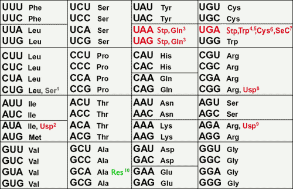
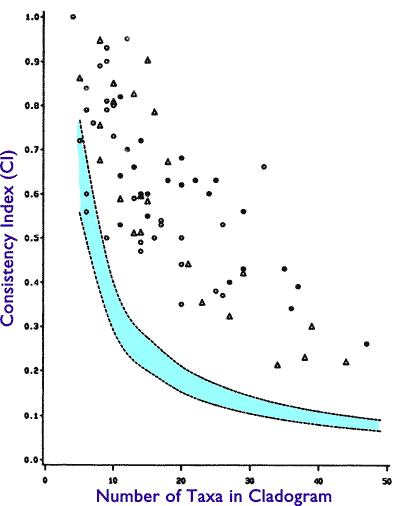
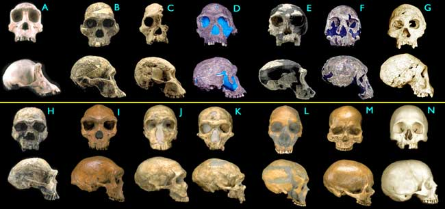
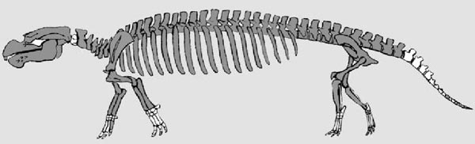

« Comme les bourgeons donnent naissance par croissance à de nouveaux bourgeons, et ceux-ci, s'ils sont vigoureux, se ramifient et surpassent de tous côtés bien des branches plus faibles, ainsi, par la génération, je crois qu'il en a été pour le grand Arbre de la Vie, qui remplit de ses branches mortes et brisées la croûte de la terre et la recouvre de ses ramifications toujours ramifiées et belles. »
Charles Darwin
L'Origine des espèces, p. 171
Sommaire de la partie 1
Prédiction 1.1 : L'unité fondamentale de la vie
"Ô Jéhovah, à quel point sont vastes tes œuvres." – Carolus Linnaeus
au début de Systema Naturae, 1757
Selon la théorie de la descendance commune, les organismes vivants modernes, avec toutes leurs différences incroyables, sont les descendants d'une seule espèce dans un lointain passé. Malgré la vaste variation de forme et de fonction parmi les organismes, plusieurs critères fondamentaux caractérisent toute la vie. Certaines des propriétés macroscopiques qui caractérisent toute la vie sont (1) la réplication, (2) l'hérédité (les caractéristiques des descendants sont corrélées à celles des ancêtres), (3) la catalyse, et (4) l'utilisation de l'énergie (métabolisme). Au minimum, ces quatre fonctions sont nécessaires pour générer un processus historique physique qui peut être décrit par un arbre phylogénétique.
Si chaque espèce vivante descend d'une espèce originale qui possédait ces quatre fonctions obligatoires, alors toutes les espèces vivantes d'aujourd'hui devraient nécessairement posséder ces fonctions (une conclusion quelque peu triviale). Plus important encore, cependant, toutes les espèces modernes devraient avoir hérité des structures qui exécutent ces fonctions. Ainsi, une prédiction fondamentale de la parenté généalogique de toute la vie, combinée à la contrainte du gradualisme, est que les organismes devraient être très similaires dans les mécanismes et structures particuliers qui exécutent ces quatre processus vitaux de base.
Confirmation :
Les polymères communs de la vie
Les structures que tous les organismes connus utilisent pour effectuer ces quatre processus de base sont toutes très similaires, malgré les probabilités. Tous les êtres vivants connus utilisent des polymères pour effectuer ces quatre fonctions de base. Les chimistes organiques ont synthétisé des centaines de polymères différents, mais les seuls utilisés par la vie, indépendamment de l'espèce, sont les polynucléotides, les polypeptides et les polysaccharides. Quelle que soit l'espèce, l'ADN, l'ARN et les protéines utilisés dans les systèmes vivants connus ont tous la même chiralité, même s'il existe au moins deux choix chimiquement équivalents de chiralité pour chacune de ces molécules. Par exemple, l'ARN possède quatre centres chiraux dans son cycle ribose, ce qui signifie qu'il a 16 stéréoisomères possibles, mais seul l'un de ces stéréoisomères est présent dans l'ARN des organismes vivants connus.
Les acides nucléiques sont le matériel génétique de la vie
Dix ans après la publication de L'Origine des espèces, les acides nucléiques ont été isolés pour la première fois par Friedrich Miescher en 1869. Il a fallu encore 75 ans après cette découverte avant que l'ADN ne soit identifié comme le matériel génétique de la vie (Avery et al. 1944). Il est tout à fait concevable que nous aurions pu trouver un matériel génétique différent pour chaque espèce. En fait, il est encore possible que les nouvelles espèces identifiées possèdent des matériaux génétiques inconnus. Cependant, toute la vie connue utilise le même polymère, le polynucléotide (ADN ou ARN), pour stocker les informations spécifiques à chaque espèce. Tous les organismes connus fondent la réplication sur la duplication de cette molécule. L'ADN utilisé par les organismes vivants est synthétisé en utilisant seulement quatre nucléosides (désoxyadénosine, désoxythymidine, désoxycytidine et désoxyguanosine) parmi les dizaines connus (au moins 102 se produisent naturellement et bien d'autres ont été synthétisés artificiellement) (Rozenski et al. 1999 ; Voet et Voet 1995, p. 969).
Catalyse enzymatique
Pour accomplir les fonctions nécessaires à la vie, les organismes doivent catalyser des réactions chimiques. Chez tous les organismes connus, la catalyse enzymatique repose sur les capacités offertes par les molécules de protéines (et, dans des cas relativement rares mais importants, par des molécules d'ARN). Il existe plus de 390 acides aminés naturellement présents connus (Voet et Voet 1995, p. 69 ; Garavelli et al. 2001) ; cependant, les molécules de protéines utilisées par tous les organismes vivants connus sont construites à partir du même sous-ensemble de 22 acides aminés.
Le code génétique universel
Il doit exister un mécanisme pour transmettre l'information du matériel génétique au matériel catalytique. Tous les organismes connus, avec des exceptions extrêmement rares, utilisent le même code génétique à cette fin. Les rares exceptions connues sont, néanmoins, des variations simples et mineures par rapport au code génétique « universel » (voir la figure 1.1.1) (Lehman 2001; Voet et Voet 1995, p. 967), exactement comme prédit par les biologistes évolutionnistes sur la base de la théorie de la descendance commune, des années avant que le code génétique ne soit enfin résolu (Brenner 1957; Crick et al. 1961; Hinegardner et Engelberg 1963; Judson 1996, p. 280-281).
Les scientifiques qui ont décrypté le code génétique dans les années 1950 et 1960 ont travaillé sous l'hypothèse que le code était universel ou presque (Judson 1996, p. 280-281). Ces scientifiques (qui comprenaient Francis Crick, Sydney Brenner, George Gamow et plusieurs autres) ont tous fait cette hypothèse et l'ont justifiée sur la base de raisonnements évolutifs, même en l'absence totale de toute preuve expérimentale directe d'un code universel.
|
 Figure 1.1.1. Le code génétique standard et les codes nucléaires variants connus. (1) Candida, une levure unicellulaire. (2) Micrococcus. (3) protozoaires ciliés et algues vertes. (4) Mycoplasma. (5) codon suppresseur chez les bactéries. (6) Euplotes. (7) le codon de la sélénocystéine. (8) Spiroplasma. (9) Micrococcus. (10) codon de reprise dans l'ARN ssrA (Lehman 2001). |
"Crick a exhorté ses compagnons à adopter deux autres hypothèses simplificatrices d'une grande audace. ... Ils ont supposé, avec une certaine appréhension, que le code génétique serait le même pour tous les êtres vivants. Il n'y avait aucune preuve en faveur de cela ; .... Pourtant, l'universalité semblait inévitable pour une raison évidente : puisque une mutation qui changerait même un seul mot ou lettre du code altérerait la plupart des protéines d'une créature, elle semblait sûrement létale." (Judson 1996, p. 280-281)
En fait, l'hypothèse d'un code génétique universel a été déterminante pour leur succès dans la résolution du code. Par exemple, en 1957, près de dix ans avant que le code génétique ne soit enfin résolu, Sydney Brenner a publié un article influent dans lequel il a conclu que tous les codes à triplets chevauchants étaient impossibles si le code était universel (Brenner 1957). Cet article a été largement considéré comme une œuvre majeure, car de nombreux chercheurs penchaient vers un code chevauchant. Bien sûr, il s'est avéré que Brenner avait raison sur la nature du véritable code.
En 1961, cinq ans avant que le code ne soit déchiffré, Crick a fait référence aux travaux de Brenner dans son rapport fondateur publié dans la revue Nature, « General nature of the genetic code for proteins » (Crick et al. 1961). Bien que l'organisme utilisé dans l'article fût la bactérie E. coli, Crick a intitulé l'article « the genetic code for proteins », et non « a genetic code » ou « the genetic code of E. coli ». Dans cet article, Crick et d'autres ont conclu que le code était (1) un code à triplet, (2) non chevauchant, et (3) que le code est lu à partir d'un point de départ fixe (c'est-à-dire le codon « start ») (Crick et al. 1961). Ces conclusions étaient explicitement basées sur l'hypothèse que le code était essentiellement le même chez le tabac, les humains et les bactéries, bien qu'il n'y eût aucun support empirique direct pour cette hypothèse. Ces conclusions, lorsqu'elles ont été appliquées à des organismes allant des bactéries aux humains, se sont avérées correctes. Ainsi, les travaux expérimentaux ont également supposé un code universel en raison de la descendance commune.
En fait, en 1963 — trois ans avant que le code ne soit enfin résolu — Hinegardner et Engelberg ont publié un article dans Science expliquant formellement le raisonnement évolutif selon lequel le code doit être universel (ou presque) si la descendance commune universelle était vraie, puisque la plupart des mutations dans le code seraient probablement létales pour tous les êtres vivants. Notez que, bien que ces premiers chercheurs aient prédit un code génétique universel basé sur la descendance commune, ils ont également prédit que des variations mineures pourraient probablement être trouvées. Hinegardner et Engelberg ont permis certaines variations dans le code génétique et ont prédit comment de telles variations devraient être distribuées si elles étaient trouvées :
"... si différents codes existent effectivement, ils devraient être associés à des groupes taxonomiques majeurs tels que les phylums ou les règnes, dont les racines remontent à un lointain passé." (Hinegardner et Engelberg 1963)
De même, avant que des codes alternatifs ne soient découverts, Francis Crick et Leslie Orgel ont exprimé leur surprise que des variantes mineures du code n'aient pas encore été observées :
« Il est quelque peu surprenant que des organismes dotés de codes quelque peu différents ne coexistent pas. » (Crick et Orgel 1973, p. 344)
Crick et Orgel avaient raison d'être surpris, et nous connaissons aujourd'hui environ une douzaine de variantes mineures du code génétique standard et universel (voir les codons gris, rouge et vert dans la figure 1.1.1). Comme l'avaient prédit Hinegardner et Engelberg, les variations mineures du code génétique standard sont en effet associées à des groupes taxonomiques majeurs (vertébrés contre plantes contre ciliés unicellulaires, etc.).
Métabolisme commun
Tous les organismes connus utilisent des voies métaboliques extrêmement similaires, voire identiques, ainsi que des enzymes métaboliques, pour traiter les molécules riches en énergie. Par exemple, les systèmes métaboliques fondamentaux chez les organismes vivants sont la glycolyse, le cycle de l'acide citrique et la phosphorylation oxydative. Chez tous les eucaryotes et chez la majorité des procaryotes, la glycolyse est réalisée en dix étapes identiques, dans le même ordre, en utilisant les mêmes dix enzymes (Voet et Voet 1995, p. 445). De plus, l'unité la plus élémentaire de stockage de l'énergie, la molécule d'adénosine triphosphate (ATP), est identique chez toutes les espèces étudiées.
Falsification potentielle :
Des milliers d'espèces nouvelles sont découvertes chaque année, et de nouvelles séquences d'ADN et de protéines sont déterminées quotidiennement à partir d'espèces auparavant inexplorées (Wilson 1992, Ch. 8). Au taux actuel, qui augmente de manière exponentielle, près de 30 000 nouvelles séquences sont déposées chaque jour au GenBank, ce qui représente plus de 38 millions de nouvelles bases séquencées chaque jour. Chaque et chacune d'elles constitue un test de la théorie de la descendance commune. Lorsque j'ai écrit ces mots pour la première fois en 1999, le taux était inférieur à un dixième de ce qu'il est aujourd'hui (en 2006), et nous disposons désormais de 20 fois plus de séquences d'ADN.
Sur la base uniquement de la théorie de la descendance commune et de la génétique des organismes connus, nous prédisons fortement que nous ne trouverons jamais aucune espèce moderne issue de phyla connus sur cette Terre possédant un matériel génétique étranger, non acide nucléique. Nous faisons également la prédiction forte que toutes les nouvelles espèces découvertes appartenant aux phyla connus utiliseront le « code génétique standard » ou une dérivée proche de celui-ci. Par exemple, selon la théorie, aucune des milliers d'insectes nouveaux et précédemment inconnus qui sont constamment découverts dans la forêt tropicale brésilienne ne possédera de génomes non acides nucléiques. De même, ces espèces d'insectes encore non découvertes ne posséderont pas de codes génétiques qui ne seraient pas des dérivés proches du code génétique standard. En l'absence de la théorie de la descendance commune, il est tout à fait possible que chaque espèce possède un code génétique très différent, spécifique uniquement à elle, car il existe 1,4 x 1070 codes génétiques équivalents sur le plan informationnel, tous utilisant les mêmes codons et acides aminés que le code génétique standard (Yockey 1992). Cette possibilité pourrait être extrêmement utile pour les organismes, car elle exclurait les infections virales interspécifiques. Cependant, cela n'a pas été observé, et la théorie de la descendance commune interdit effectivement une telle observation.
Comme un autre exemple, neuf nouvelles espèces de lémuriens et deux espèces de marmousets (tous des primates) ont été découvertes dans les forêts de Madagascar et du Brésil en 2000 (Groves 2000; Rasoloarison et al. 2000; Thalmann et Geissmann 2000). Dix nouvelles espèces de singes ont été découvertes au Brésil seul depuis 1990 (Van Roosmalen et al. 2000). Rien en biologie n'empêche ces diverses espèces de posséder un matériel génétique jusqu'alors inconnu ou un code génétique précédemment inutilisé—rien, c'est-à-dire, sauf la théorie de la descendance commune. Cependant, nous savons désormais de manière définitive que les nouveaux lémuriens utilisent de l'ADN avec le code génétique standard (Yoder et al. 2000) ; les marmousets n'ont pas encore été testés.
De plus, chaque espèce pourrait utiliser un polymère différent pour la catalyse. Les polymères utilisés pourraient encore être chimiquement identiques, mais présenter des chiralités différentes selon les espèces. Il existe des milliers de voies glycolytiques thermodynamiquement équivalentes (même en utilisant les mêmes dix étapes réactionnelles, mais dans un ordre différent), il est donc possible que chaque espèce possède sa propre voie glycolytique spécifique, adaptée à ses propres besoins uniques. Le même raisonnement s'applique aux autres voies métaboliques fondamentales, telles que le cycle de l'acide citrique et la phosphorylation oxydative.
Enfin, de nombreuses molécules autres que l'ATP pourraient servir tout aussi bien de monnaie commune pour l'énergie chez diverses espèces (CTP, TTP, UTP, ITP, ou toute molécule semblable à l'ATP avec l'un des 293 acides aminés connus ou l'un des douzaines d'autres bases remplaçant la partie adénosine viennent immédiatement à l'esprit). La découverte de nouveaux animaux ou plantes contenant l'un des exemples anormaux mentionnés ci-dessus serait une falsification potentielle de la descendance commune, mais ils n'ont pas été trouvés.
Prédiction 1.2 : Une hiérarchie imbriquée d'espèces
Comme le montre la phylogénie de la figure 1, le motif prédit des organismes à un instant donné peut être décrit comme des « groupes dans des groupes », autrement dit une hiérarchie imbriquée. Les seuls processus connus qui génèrent spécifiquement des motifs uniques, imbriqués et hiérarchiques sont les processus évolutifs à ramifications. La descendance commune est un processus génétique dans lequel l'état de la génération/individu présente dépend uniquement des changements génétiques survenus depuis la population/individu ancestral la plus récente. Par conséquent, l'évolution graduelle à partir d'ancêtres communs doit se conformer à la mathématique des processus de Markov et des chaînes de Markov. En utilisant la mathématique markovienne, il peut être rigoureusement démontré que les systèmes de réplication markoviens à ramifications produisent des hiérarchies imbriquées (Givnish et Sytsma 1997 ; Harris 1989 ; Norris 1997). Pour ces raisons, les biologistes utilisent couramment des chaînes de Markov à ramifications pour modéliser efficacement les processus évolutifs, y compris les processus génétiques complexes, les distributions temporelles des noms de famille dans les populations (Galton et Watson 1874) et le comportement des pathogènes lors d'épidémies.
L'organisation hiérarchique imbriquée des espèces contraste fortement avec d'autres modèles biologiques possibles, tels que le continuum de « la grande chaîne de l'être » et les continus prédits par la théorie de la progression organique de Lamarck (Darwin 1872, pp. 552-553; Futuyma 1998, pp. 88-92). La simple ressemblance entre les organismes ne suffit pas à soutenir l'évolution macroscopique ; le motif de classification imbriquée produit par un processus évolutif ramifié, tel que la descendance commune, est beaucoup plus spécifique que la simple ressemblance. Les exemples du monde réel qui ne peuvent pas être objectivement classés dans des hiérarchies imbriquées sont les particules élémentaires (décrites par la chromodynamique quantique), les éléments (dont l'organisation est décrite par la mécanique quantique et illustrée par le tableau périodique), les planètes de notre système solaire, les livres d'une bibliothèque, ou les objets spécialement conçus comme les bâtiments, les meubles, les voitures, etc.
Bien que classer de manière subjective et hiérarchique n'importe quoi soit trivial, seules certaines choses peuvent être classées de manière objective dans une hiérarchie imbriquée cohérente et unique. La distinction établie ici entre « subjectif » et « objectif » est cruciale et nécessite quelques développements, et elle est mieux illustrée par des exemples. Différents modèles de voitures peuvent certainement être classés hiérarchiquement—peut-être pourrait-on classer d'abord les voitures par couleur, puis, au sein de chaque couleur, par nombre de roues, puis, au sein de chaque nombre de roues, par constructeur, etc. Cependant, une autre personne pourrait classer les mêmes voitures d'abord par constructeur, puis par taille, puis par année, puis par couleur, etc. Le schéma de classification particulier choisi pour les voitures est subjectif. En revanche, les langues humaines, qui ont des ancêtres communs et sont dérivées par descendance avec modification, peuvent généralement être classées dans des hiérarchies imbriquées objectives (Pei 1949; Ringe 1999). Personne ne pourrait raisonnablement soutenir que l'espagnol devrait être catégorisé avec l'allemand plutôt qu'avec le portugais.
La différence entre la classification des voitures et la classification des langues réside dans le fait que, pour les voitures, certains caractères (par exemple, la couleur ou le constructeur) doivent être considérés comme plus importants que d'autres caractères afin que la classification fonctionne. Le type de caractères de voiture qui est plus important dépend de la préférence personnelle de l'individu qui effectue la classification. En d'autres termes, certains types de caractères doivent être pondérés subjectivement afin de classer les voitures dans des hiérarchies imbriquées ; les voitures ne tombent pas dans des hiérarchies imbriquées naturelles, uniques et objectives.
En raison de ces faits, une analyse cladistique des voitures ne produira pas un arbre unique, cohérent et bien soutenu qui affiche des hiérarchies imbriquées. Une analyse cladistique des voitures (ou, alternativement, une analyse cladistique d'organismes imaginaires dotés de caractères attribués aléatoirement) produira bien sûr une phylogénie, mais il existera un très grand nombre d'autres phylogénies, dont beaucoup auront des topologies très différentes, qui seront tout aussi bien soutenues par les mêmes données. En revanche, une analyse cladistique d'organismes ou de langues aboutira généralement à une hiérarchie imbriquée bien soutenue, sans pondération arbitraire de certains caractères (Ringe 1999). L'analyse cladistique d'un véritable processus généalogique produit un ou quelques arbres phylogénétiques qui sont beaucoup mieux soutenus par les données que les autres arbres possibles.
Fait intéressant, Linné, qui a d'abord découvert la classification hiérarchique objective des organismes vivants, a également tenté de classer les roches et les minéraux de manière hiérarchique. Cependant, sa classification pour les objets non vivants a finalement échoué, car elle s'est révélée très subjective. Les classifications hiérarchiques pour les objets inanimés ne fonctionnent pas pour la même raison que, contrairement aux organismes, les roches et les minéraux n'évoluent pas par descendance avec modification à partir d'ancêtres communs.
Le degré auquel une phylogénie donnée présente une hiérarchie imbriquée unique, bien étayée et objective peut être rigoureusement quantifié. Plusieurs tests statistiques différents ont été développés pour déterminer si une phylogénie possède une hiérarchie imbriquée subjective ou objective, ou si une hiérarchie imbriquée donnée aurait pu être générée par un processus aléatoire plutôt que par un processus généalogique (Swofford 1996, p. 504). Ces tests mesurent le degré de « structure hiérarchique cladistique » (également connue sous le nom de « signal phylogénétique ») dans une phylogénie, et les phylogénies basées sur de vrais processus généalogiques donnent des valeurs élevées de structure hiérarchique, tandis que les phylogénies subjectives qui ne possèdent qu'une structure hiérarchique apparente (comme une phylogénie de voitures, par exemple) donnent des valeurs faibles (Archie 1989; Faith et Cranston 1991; Farris 1989; Felsenstein 1985; Hillis 1991; Hillis et Huelsenbeck 1992; Huelsenbeck et al. 2001; Klassen et al. 1991).
Il y a une réserve à considérer concernant cette prédiction : si les taux d'évolution sont rapides, alors l'information cladistique peut être perdue au fil du temps, car elle serait essentiellement aléatoire. Plus le taux est élevé, moins de temps est nécessaire pour effacer l'information concernant le motif de branchement historique de l'évolution. Les caractères évoluant lentement nous permettent de voir plus loin dans le temps ; les caractères évoluant rapidement restreignent cette vue aux événements plus récents. Si le taux d'évolution d'un certain caractère est extrêmement lent, une hiérarchie imbriquée sera observée pour ce caractère uniquement pour des taxons très éloignés. Cependant, le « taux d'évolution » par rapport au « temps écoulé depuis la divergence » est relatif ; si la descendance commune est vraie, alors dans un certain cadre temporel, nous serons toujours capables d'observer une hiérarchie imbriquée pour tout caractère donné. De plus, nous savons empiriquement que différents caractères évoluent à des taux différents (par exemple, certains gènes ont des taux de mutation de fond plus élevés que d'autres). Ainsi, si la descendance commune est vraie, nous devrions observer des hiérarchies imbriquées sur une large gamme de temps à divers niveaux biologiques.
Par conséquent, puisque la descendance commune est un processus généalogique, la descendance commune devrait produire des organismes qui peuvent être organisés en hiérarchies imbriquées objectives. De manière équivalente, nous prédisons que, en général, les analyses cladistiques des organismes devraient produire des phylogénies présentant de grandes valeurs de structure hiérarchique statistiquement significatives (dans la pratique scientifique standard, un résultat ayant une « haute signification statistique » est un résultat qui a une probabilité de 1 % ou moins de se produire par hasard [P < 0,01]). En tant que représentation de la descendance commune universelle, l'arbre universel de la vie devrait présenter une structure hiérarchique et un signal phylogénétique très élevés et très significatifs.
Confirmation :
La plupart des espèces existantes peuvent être classées assez facilement dans une hiérarchie imbriquée. Cela est évident dans l'utilisation du système de classification de Linnaeus. Sur la base de caractères dérivés partagés, les organismes étroitement apparentés peuvent être placés dans un même groupe (tel qu'un genre), plusieurs genres peuvent être regroupés en une seule famille, plusieurs familles peuvent être regroupées en un ordre, etc.
Comme exemple spécifique (voir Figure 1), les plantes peuvent être classées en vasculaires et non vasculaires (c'est-à-dire qu'elles possèdent ou non du xylème et du phloème). À l'intérieur du groupe vasculaire, il existe deux divisions, les plantes à graines et les plantes sans graines. Plus en profondeur, au sein des plantes à graines, se trouvent deux autres groupes, les angiospermes (qui possèdent des graines enfermées et protégées) et les gymnospermes (ayant des graines non enfermées). Au sein du groupe des angiospermes se trouvent les monocotylédones et les dicotylédones.
Plus important encore, l'arbre phylogénétique standard et presque toutes les phylogénies évolutives moins inclusives présentent des valeurs de structure hiérarchique statistiquement significatives et élevées (Baldauf et al. 2000; Brown et al. 2001; Hillis 1991; Hillis et Huelsenbeck 1992; Klassen et al. 1991).
|
 Figure 1.2.1. Un graphique des valeurs de CI des cladogrammes en fonction du nombre de taxons dans les cladogrammes. Les valeurs de CI sont sur l'axe des y ; le nombre de taxons est sur l'axe des x. Les limites de confiance à 95 % sont représentées en turquoise clair. Tous les points au-dessus et à droite de la région turquoise sont des valeurs de CI élevées statistiquement significatives. De même, tous les points en dessous et à gauche de la région turquoise sont des valeurs de CI faibles statistiquement significatives. (reproduit de Klassen et al. 1991, Figure 6). |
Falsification potentielle :
Il serait très problématique de découvrir de nombreuses espèces combinant des caractéristiques de différents regroupements imbriqués. En continuant avec l'exemple précédent, certaines plantes non vasculaires pourraient avoir des graines ou des fleurs, comme les plantes vasculaires, mais ce n'est pas le cas. Les gymnospermes (par exemple les conifères ou les pins) pourraient occasionnellement être trouvés avec des fleurs, mais cela n'arrive jamais. Les plantes non graineuses, comme les fougères, pourraient être trouvées avec des tiges ligneuses ; cependant, seules certaines angiospermes ont des tiges ligneuses. Il est concevable que certains oiseaux aient des glandes mammaires ou des poils ; certains mammifères pourraient avoir des plumes (elles constituent un excellent moyen d'isolation). Certains poissons ou amphibiens pourraient avoir des dents différenciées ou cuspides, mais ce ne sont que des caractéristiques des mammifères. Un mélange et un assortiment de caractères comme celui-ci rendraient extrêmement difficile l'organisation objective des espèces en hiérarchies imbriquées. Contrairement aux organismes, les voitures ont un mélange et un assortiment de caractères, et c'est précisément pourquoi une hiérarchie imbriquée ne découle pas naturellement de la classification des voitures.
Si cela était impossible, ou très problématique, de classer les espèces dans un schéma de classification hiérarchique objectif (comme c'est le cas pour les exemples de voiture, de chaise, de livre, d'élément atomique et de particule élémentaire mentionnés ci-dessus), la macroévolution serait efficacement réfutée. Plus précisément, si l'arbre phylogénétique de toute la vie donnait des valeurs de signal phylogénétique (structure hiérarchique) statistiquement significativement faibles, la descendance commune serait résolument falsifiée.
En fait, il est possible d'observer un motif « réciproque » issu de hiérarchies imbriquées. Mathématiquement, une hiérarchie imbriquée est le résultat de corrélations spécifiques entre certains caractères des organismes. Lorsque les taux évolutifs sont rapides, les caractères deviennent distribués aléatoirement les uns par rapport aux autres, et les corrélations s'affaiblissent. Cependant, les caractères peuvent également être anti-corrélés ; il est possible qu'ils soient corrélés dans le sens opposé à celui qui produit des hiérarchies imbriquées (Archie 1989; Faith et Cranston 1991; Hillis 1991; Hillis et Huelsenbeck 1992; Klassen et al. 1991). L'observation d'un tel motif anti-corrélé constituerait une forte réfutation de la descendance commune, indépendamment des taux évolutifs.
Une mesure largement utilisée de la structure hiérarchique cladistique est l'indice de cohérence (CI). Les propriétés statistiques de la mesure CI ont été étudiées dans un article fréquemment cité par Klassen et al. (Klassen et al. 1991 ; voir Figure 1.2.1). La valeur exacte du CI dépend du nombre de taxons dans l'arbre phylogénétique considéré. Dans cet article, les auteurs ont calculé quelles valeurs de CI étaient statistiquement significatives pour divers nombres de taxons. Des valeurs plus élevées de CI indiquent un degré plus élevé de structure hiérarchique.
Par exemple, une CI de 0,2 est attendue à partir de données aléatoires pour 20 taxa. Une valeur de 0,3 est, en revanche, hautement statistiquement significative. Ce qui est le plus intéressant pour le point présent est le fait qu'une CI de 0,1 pour 20 taxa est également hautement statistiquement significative, mais elle est trop faible—elle est indicative d'une structure anti-cladistique. Klassen et al. ont pris 75 valeurs de CI issues de cladogrammes publiés en 1989 (combinées à partir de trois articles) et ont noté comment elles se sont comportées en termes de signification statistique. Les cladogrammes utilisés comprenaient de 5 à 49 taxa différents (c'est-à-dire différentes espèces). Trois des 75 cladogrammes se situaient dans les limites de confiance à 95 % pour les données aléatoires, ce qui signifie qu'ils étaient indistinguables des données aléatoires. Tous les autres présentaient des valeurs de CI hautement statistiquement significatives. Aucun ne présentait de valeurs faibles significatives ; aucun ne montrait un motif anti-corrélé, anti-hiérarchique.
Notez que cette étude a été réalisée avant l'existence de mesures de significativité statistique permettant aux chercheurs de « trier » les cladogrammes erronés. Prévisible, les trois ensembles de données « erronés » considérés sous dix taxa — il est bien sûr plus difficile de déterminer la significativité statistique avec très peu de données. Soixante-quinze études indépendantes menées par différents chercheurs, sur différents organismes et gènes, avec des valeurs élevées de CI (P < 0,01) constituent une confirmation incroyable avec un degré astronomique de significativité statistique combinée (P << 10-300, Bailey et Gribskov 1998 ; Fisher 1990). Si l'inverse était vrai — si des études de ce type donnaient des valeurs de CI statistiquement significatives (c'est-à-dire structure hiérarchique cladistique) inférieures à celles attendues à partir de données aléatoires — la descendance commune aurait été fermement infirmée.
Gardez à l'esprit qu'environ 1,5 million d'espèces sont actuellement connues, et que la majorité de ces espèces a été découverte depuis que Darwin a énoncé sa théorie de la descendance commune.
Néanmoins, elles s'inscrivent toutes dans le motif hiérarchique correct, compte tenu des marges d'erreur de nos méthodes.
De plus, il est estimé que seulement 1 à 10 % de toutes les espèces vivantes ont même été cataloguées, sans parler d'être étudiées en détail.
Les découvertes de nouvelles espèces affluent quotidiennement, et chacune constitue un test de la théorie de la descendance commune (Wilson 1992, Ch. 8).
Prédiction 1.3 : Convergence de phylogénies indépendantes
« Il sera déterminé dans quelle mesure l'arbre phylogénétique, tel qu'il est déduit de données moléculaires en toute indépendance par rapport aux résultats de la biologie des organismes, coïncide avec l'arbre phylogénétique construit sur la base de la biologie des organismes. Si les deux arbres phylogénétiques sont majoritairement en accord quant à la topologie de la ramification, la meilleure preuve unique de la réalité de l'évolution macroscopique serait fournie. En effet, seule la théorie de l'évolution, combinée à la réalisation que les événements à tout niveau supramoléculaire sont cohérents avec les événements moléculaires, pourrait raisonnablement expliquer une telle concordance entre des lignes de preuves obtenues indépendamment, à savoir les séquences d'acides aminés de chaînes polypeptidiques homoloques d'une part, et les découvertes de la taxonomie des organismes et de la paléontologie d'autre part. Outre offrir une satisfaction intellectuelle à certains, la publicité de telles preuves consisterait bien entendu à battre un cheval mort. Certains coups de fouet donnés à un cheval mort peuvent être éthiques, lorsqu'ici et là ils affichent des soubresauts inattendus qui ressemblent à la vie. »
Emile Zuckerkandl et Linus Pauling, discutant de la possibilité de la hiérarchie imbriquée jumelée avant que les premières phylogénies moléculaires n'aient été réalisées.
(1965) « Divergence et convergence évolutives dans les protéines. » dans Gènes et protéines en évolution, p. 101.
Ici, nous commençons à faire tourner le vieux cheval de bataille de Pauling depuis quarante ans. S'il existe un arbre phylogénétique historique qui unit toutes les espèces dans une généalogie objective, toutes les lignes séparées de preuves devraient converger vers le même arbre (Penny et al. 1982; Penny et al. 1991; Zuckerkandl et Pauling 1965). Les arbres phylogénétiques indépendamment dérivés de tous les organismes devraient se correspondre avec un haut degré de signification statistique.
Confirmation :
Les arbres phylogénétiques bien déterminés déduits des preuves indépendantes de la morphologie et des séquences moléculaires correspondent avec un degré extrêmement élevé de signification statistique. De nombreux gènes ayant des fonctions cellulaires très fondamentales sont ubiquitaires—they se produisent dans les génomes de la plupart ou de tous les organismes. Un exemple souvent cité est le gène de la cytochrome c. Puisque tous les eucaryotes contiennent le gène pour cette protéine essentielle, ni sa présence ni sa fonction ne corréle avec la morphologie de l'organisme. De plus, en raison du fait de la redondance du codage de l'ADN, certaines parties de certaines séquences d'ADN n'ont absolument aucune corrélation avec le phénotype (par exemple, certains introns ou la position de la troisième base à quatre fois dégénérée de la plupart des codons d'ADN). En raison de ces deux aspects de certaines séquences d'ADN, l'ubiquité et la redondance, des séquences d'ADN peuvent être soigneusement choisies qui constituent des données complètement indépendantes de la morphologie. (Voir point 17 et 18 pour plus de contexte sur les preuves de séquences moléculaires et pour plus de détails sur la manière dont elles sont indépendantes de la morphologie.) Le degré de congruence phylogénétique entre ces ensembles de données indépendants est tout simplement incroyable.
En sciences, les mesures indépendantes de valeurs théoriques ne sont jamais exactes. Lorsqu'on infère une valeur (telle qu'une constante physique comme la charge de l'électron, la masse du proton ou la vitesse de la lumière), une erreur existe toujours dans la mesure, et toutes les mesures indépendantes sont dans une certaine mesure incongruentes. Bien sûr, la valeur vraie de quelque chose n'est jamais connue avec certitude en sciences — nous n'avons que des mesures que nous espérons approcher la valeur vraie. Scientifiquement, les questions pertinentes importantes sont donc : « Quand on compare deux mesures, quelle est la taille de la divergence nécessaire pour poser problème ? » et « À quel point les mesures doivent-elles être proches pour fournir une confirmation forte ? » Les scientifiques répondent à ces questions quantitativement grâce à la probabilité et aux statistiques (Boîte 1978 ; Fisher 1990 ; Wadsworth 1997). Pour être scientifiquement rigoureux, nous exigeons une signification statistique. Certaines mesures d'une valeur donnée correspondent avec une signification statistique (bon), et d'autres ne le font pas (mauvais), même si aucune mesure ne correspond exactement (réalité).
| Nombre de taxons |
Nombre d'arbres possibles
NR = (2n-3)!! = (2n-3)!/(2n-2(n-2)!) |
|
| enraciné | non enraciné | |
| 2 | 3 | 1 |
| 3 | 4 | 3 |
| 4 | 5 | 15 |
| 5 | 6 | 105 |
| 6 | 7 | 945 |
| 7 | 8 | 10,395 |
| 8 | 9 | 135,135 |
| 9 | 10 | 2,027,025 |
| 10 | 11 | 34,459,425 |
| 11 | 12 | 654,729,075 |
| 12 | 13 | 13,749,310,575 |
| 13 | 14 | 316,234,143,225 |
| 14 | 15 | 7,905,853,580,625 |
| 15 | 16 | 213,458,046,676,875 |
| 16 | 17 | 6,190,283,353,629,375 |
| 17 | 18 | 191,898,783,962,510,625 |
| 18 | 19 | 6,332,659,870,762,850,625 |
| 19 | 20 | 221,643,095,476,699,771,875 |
| 20 | 21 | 8,200,794,532,637,891,559,375 |
Alors, dans quelle mesure les arbres phylogénétiques issus d'études morphologiques correspondent-ils aux arbres construits à partir d'études moléculaires indépendantes ? Il existe plus de 1038 façons différentes d'organiser les 30 grands taxons représentés dans Figure 1 en un arbre phylogénétique (voir Tableau 1.3.1 ; Felsenstein 1982 ; Li 1997, p. 102). Malgré ces probabilités, les relations présentées dans la Figure 1, telles que déterminées à partir de caractères morphologiques, sont parfaitement congruentes avec les relations déterminées indépendamment à partir d'études moléculaires sur la cytochrome c (pour les phylogénies de consensus issues d'études pré-moléculaires, voir Carter 1954, Figure 1, p. 13 ; Dodson 1960, Figures 43, p. 125, et Figure 50, p. 150 ; Osborn 1918, Figure 42, p. 161 ; Haeckel 1898, p. 55 ; Gregory 1951, Fig. en page de titre opposée ; pour les phylogénies issues des premières études sur la cytochrome c, voir McLaughlin et Dayhoff 1973 ; Dickerson et Timkovich 1975, pp. 438-439). En termes quantitatifs, des mesures morphologiques et moléculaires indépendantes de ce type ont déterminé l'arbre phylogénétique standard, tel que montré dans Figure 1, avec une précision supérieure à 38 décimales. Cette corroboration phénoménale de la descendance commune universelle est désignée sous le nom de « hiérarchie imbriquée jumelle ». Ce terme est cependant un peu trompeur, car il existe en réalité plusieurs hiérarchies imbriquées, déterminées indépendamment à partir de nombreuses sources de données.
Lorsque deux arbres déterminés indépendamment ne correspondent pas sur certaines branches, ils sont appelés « incongruents ». En général, les arbres phylogénétiques peuvent être très incongruents et tout de même correspondre avec un degré extrêmement élevé de signification statistique (Hendy et al. 1984; Penny et al. 1982; Penny et Hendy 1986; Steel et Penny 1993). Même pour une phylogénie avec un petit nombre d'organismes, le nombre total d'arbres possibles est extrêmement élevé. Par exemple, il existe environ mille phylogénies différentes possibles pour seulement six organismes ; pour neuf organismes, il existe des millions de phylogénies possibles ; pour douze organismes, il existe près de 14 billions de phylogénies différentes possibles (Tableau 1.3.1; Felsenstein 1982; Li 1997, p. 102). Ainsi, la probabilité de trouver deux arbres similaires par hasard via deux méthodes indépendantes est extrêmement faible dans la plupart des cas. En fait, deux arbres différents de 16 organismes qui ne correspondent pas sur jusqu'à 10 branches correspondent toujours avec une haute signification statistique (Hendy et al. 1984, Tableau 4; Steel et Penny 1993). Pour plus d'informations sur la signification statistique des arbres qui ne correspondent pas exactement, consultez « Statistiques des arbres phylogénétiques incongruents ».
Le degré étonnant de concordance entre même les arbres phylogénétiques les plus incongruents trouvés dans la littérature biologique est largement sous-estimé, principalement parce que la plupart des gens (y compris de nombreux biologistes) sont ignorants des mathématiques impliquées (Bryant et al. 2002; Penny et al. 1982; Penny et Hendy 1986). Penny et Hendy ont réalisé une série d'analyses statistiques détaillées de la signification des arbres phylogénétiques incongruents, et voici leur conclusion :
"Les biologistes semblent rechercher « l'Arbre Unique » et ne semblent pas satisfaits par une gamme d'options. Cependant, il n'y a aucune difficulté logique à avoir une gamme d'arbres. Il existe 34 459 425 arbres possibles [non enracinés] pour 11 taxons (Penny et al. 1982), et réduire cela à l'ordre de 10 à 50 arbres est analogue à une précision de mesure d'environ une partie sur 106." (Penny et Hendy 1986, p. 414)
Pour un arbre phylogénétique universel plus réaliste incluant des dizaines de taxons et tous les phylums connus, la précision est meilleure de plusieurs ordres de grandeur. Pour mettre en perspective l'importance de cette confirmation incroyable, considérons la théorie moderne de la gravité. La théorie de la gravitation universelle de Newton et la théorie de la relativité générale d'Einstein reposent toutes deux sur une constante physique fondamentale, G, la constante gravitationnelle. Si ces théories de la gravité sont correctes, des méthodes indépendantes devraient déterminer des valeurs similaires pour G. Cependant, à ce jour, des mesures indépendantes très précises de la constante gravitationnelle G divergent d'environ 1% (Kestenbaum 1998; Quinn 2000). Voici comment David Kestenbaum décrit l'état actuel de la théorie de la gravité dans la communauté scientifique, tel que rapporté dans la prestigieuse revue Science :
"Bien que la charge de l'électron soit connue à sept décimales, les physiciens perdent la trace de G après seulement la troisième décimale. Pour certains, c'est une honte. « Cela me gratte comme une épine dans la selle », dit Alvin Sanders, physicien à l'Université de Virginie à Charlottesville. Au cours des dernières décennies, lui et une poignée d'autres physiciens se sont consacrés à mesurer G plus précisément. À leur grande déception, ils ont obtenu des valeurs très différentes. « On pourrait dire que nous avons eu un recul », dit Barry Taylor, physicien à l'Institut national des normes et de la technologie (NIST) à Gaithersburg, dans le Maryland. ...
« Personne ne comprend [les résultats excentriques du PTB, le laboratoire allemand des normes à Braunschweig] », dit Meyer. « Ils doivent avoir fait une erreur incroyable, mais nous ne pouvons pas la trouver. » ... dit Terry Quinn, « nous devrons peut-être simplement rejeter le résultat du PTB. » » (Kestenbaum 1998)
Deux ans plus tard, le même Terry Quinn (du Bureau international des poids et mesures [BIPM] à Sèvres, en France) a récapitulé la situation dans une revue pour la revue Nature :
"L'intérêt actuel pour la mesure de G a été stimulé par la publication en 1996 d'une valeur pour G qui différait de 0,6 % de la valeur acceptée donnée dans le rapport CODATA de 1986 précédent. Pour tenir compte de cela, le rapport CODATA de 1998 recommande une valeur pour G ... avec une incertitude de 0,15 %, soit dix fois pire qu'en 1986. Alors que les autres constantes fondamentales étaient mieux connues en 1998 qu'en 1986, l'incertitude sur G a augmenté de manière spectaculaire. La communauté G semblait aller en arrière plutôt qu'en avant." (Quinn 2000)
Néanmoins, une précision d'un peu moins de 1 % reste tout à fait satisfaisante ; elle n'est pas, à ce stade, suffisante pour nous inciter à mettre en doute la validité et l'utilité des théories modernes de la gravité. Cependant, si les tests de la théorie de la descendance commune étaient aussi médiocres, les différents arbres phylogénétiques, comme illustrés à la figure 1, devraient différer sur 18 des 30 branches ! Dans leur quête de perfection scientifique, certains biologistes sont légitimement irrités par les écarts évidents entre certains arbres phylogénétiques (Gura 2000 ; Patterson et al. 1993 ; Maley et Marshall 1998). Cependant, comme illustré à la figure 1, l'arbre phylogénétique standard est connu à 38 décimales, ce qui représente une précision bien supérieure à celle des constantes physiques les mieux déterminées. Pour comparaison, la charge de l'électron est connue à seulement sept décimales, la constante de Planck à seulement huit décimales, la masse du neutron, du proton et de l'électron sont toutes connues à seulement neuf décimales, et la constante gravitationnelle universelle a été déterminée à seulement trois décimales.
De plus, si la descendance commune est vraie, nous nous attendons à ce que l'inclusion de plus de données dans les analyses phylogénétiques augmente la concordance entre les arbres phylogénétiques. Comme expliqué dans la barre latérale des réserves phylogénétiques, les arbres génétiques ne sont pas équivalents aux arbres d'espèces (Avise et Wollenberg 1997; Fitch 1970; Hudson 1992; Nichols 2001; Wu 1991). La génétique et l'hérédité sont des processus stochastiques (c'est-à-dire probabilistes), et par conséquent, nous nous attendons à ce que les phylogénies construites avec des gènes uniques soient partiellement incongruentes. Cependant, l'inclusion de plusieurs gènes indépendants dans une analyse phylogénétique devrait contourner cette difficulté ; en général, plus de cinq gènes indépendants sont nécessaires pour reconstruire avec précision une phylogénie d'espèces (Wu 1991). Les arbres phylogénétiques construits avec plusieurs gènes devraient donc être plus précis que ceux construits avec des gènes uniques, et en effet, les arbres génétiques combinés sont plus congruents (Baldauf et al. 2000; Hedges 1994; Hedges et Poling 1999; Penny et al. 1982).
Falsification potentielle :
Lorsque la séquence des molécules biologiques est devenue possible, la réalisation d'un arbre nettement différent basé sur des preuves moléculaires indépendantes aurait été un coup fatal pour la théorie de l'évolution, même si c'est de loin le résultat le plus probable. Plus précisément, l'hypothèse de la descendance commune aurait été infirmée si les arbres phylogénétiques universels déterminés à partir des preuves moléculaires et morphologiques indépendantes ne correspondaient pas avec une signification statistique. De plus, nous sommes maintenant en mesure de commencer la construction d'arbres phylogénétiques basés sur d'autres lignes de données indépendantes, telles que l'organisation chromosomique. Dans un sens très général, le nombre de chromosomes, leur longueur et la position chromosomique des gènes sont tous indépendants de manière causale de la morphologie et de l'identité de séquence. Les phylogénies construites à partir de ces données devraient reproduire l'arbre phylogénétique standard aussi bien (Hillis et al. 1996; Li 1997).
Critiques :
Une objection courante est l'affirmation selon laquelle l'anatomie n'est pas indépendante de la biochimie, et que les organismes anatomiquement similaires sont donc susceptibles d'être biochimiquement similaires (par exemple, dans leurs séquences moléculaires) simplement pour des raisons fonctionnelles. Selon cet argument, nous devrions nous attendre à ce que les phylogénies basées sur les séquences moléculaires soient similaires aux phylogénies basées sur la morphologie, même si les organismes ne sont pas liés par une descendance commune. Cet argument est très erroné. Il n'existe aucune raison biologique connue, outre la descendance commune, pour supposer que des morphologies similaires doivent avoir une biochimie similaire. Bien que cette logique puisse sembler tout à fait raisonnable au premier abord, toute la biologie moléculaire réfute cette corrélation de « bon sens ». En général, un ADN et une biochimie similaires donnent une morphologie et une fonction similaires, mais le raisonnement inverse n'est pas vrai : une morphologie et une fonction similaires ne sont pas nécessairement le résultat d'un ADN ou d'une biochimie similaires. La raison est facilement compréhensible une fois expliquée ; de nombreuses séquences d'ADN très différentes ou structures biochimiques peuvent aboutir aux mêmes fonctions et aux mêmes morphologies (voir prédictions 4.1 et 4.2 pour une explication détaillée).
En tant qu'analogie proche, considérons les programmes informatiques. Netscape fonctionne essentiellement de la même manière sur un Macintosh, un IBM ou une machine Unix, mais le code binaire de chaque programme est très différent. Les programmes informatiques qui effectuent les mêmes fonctions peuvent être écrits dans la plupart des langages informatiques—Basic, Fortran, C, C++, Java, Pascal, etc.—et des programmes identiques peuvent être compilés en code binaire de nombreuses façons différentes. De plus, même en utilisant le même langage informatique, il existe de nombreuses façons différentes d'écrire n'importe quel programme informatique spécifique, même en utilisant les mêmes algorithmes et sous-programmes. Finalement, il n'y a aucune raison de soupçonner que des programmes informatiques similaires sont écrits avec un code similaire, basé uniquement sur la fonction du programme. C'est la raison pour laquelle les sociétés de logiciels gardent leur code source secret, mais elles ne se soucient pas que les concurrents puissent utiliser leurs programmes—il est essentiellement impossible de déduire le code du programme à partir de la fonction et du fonctionnement du logiciel. La même conclusion s'applique aux organismes biologiques, pour des raisons très similaires.
Pour réitérer, bien que des génotypes similaires (par exemple, des séquences moléculaires) donnent souvent des phénotypes similaires (par exemple, des caractères morphologiques), des phénotypes similaires ne sont pas nécessairement le résultat de génotypes similaires. Ainsi, il est tout à fait possible que les arbres phylogénétiques construits à partir de données génotypiques puissent être radicalement différents des arbres phylogénétiques construits à partir de données phénotypiques. En fait, en l'absence de descendance commune ou de toute autre raison de supposer que ces deux types d'arbres devraient être similaires, le résultat le plus probable de loin est qu'ils seront radicalement différents. C'est précisément pourquoi il est possible de falsifier la prédiction macroévolutif selon laquelle les phylogénies dérivées indépendamment devraient être similaires.
Prédiction 1.4 : Formes intermédiaires et transitionnelles : les morphologies possibles des ancêtres communs prédits
- Exemple 1 : reptiles-oiseaux
- Exemple 2 : reptiles-mammifères
- Exemple 3 : singes-humains
- Exemple 4 : cétacés à pattes
- Exemple 5 : sirènes à pattes
Tous les animaux fossilisés découverts devraient correspondre à l'arbre phylogénétique standard. Si tous les organismes sont unis par une descendance commune d'un ancêtre commun, alors il existe un seul arbre phylogénétique historique véritable pour tous les organismes. De même, il existe un seul arbre généalogique historique véritable pour tout individu humain. Il s'ensuit directement que s'il existe une phylogénie universelle unique, alors tous les organismes, passés et présents, s'y intègrent de manière unique. Puisque l'arbre phylogénétique standard est la meilleure approximation de la phylogénie historique véritable, nous nous attendons à ce que tous les animaux fossilisés correspondent à l'arbre phylogénétique standard dans la marge d'erreur de nos méthodes scientifiques.
Chaque nœud partagé entre deux branches dans une phylogénie ou un cladogramme représente un ancêtre commun prédit ; ainsi, il y a ~29 ancêtres communs prédits à partir de l'arbre montré dans Figure 1. Notre arbre standard montre que le groupe des oiseaux est le plus étroitement lié au groupe des reptiles, avec un nœud reliant les deux (A dans la Figure 1) ; ainsi, nous prédisons la possibilité de trouver des fossiles intermédiaires entre les oiseaux et les reptiles. Le même raisonnement s'applique aux mammifères et aux reptiles (B dans la Figure 1). Cependant, nous prédisons que nous ne devrions jamais trouver d'intermédiaires fossiles entre les oiseaux et les mammifères.
Il convient de souligner qu'il n'y a aucune exigence selon laquelle des organismes intermédiaires doivent s'éteindre. En fait, tous les organismes vivants peuvent être considérés comme intermédiaires entre des taxons adjacents dans un arbre phylogénétique. Par exemple, les reptiles modernes sont intermédiaires entre les amphibiens et les mammifères, et les reptiles sont également intermédiaires entre les amphibiens et les oiseaux. En ce qui concerne les prédictions macroévolutives concernant la morphologie, ce point est trivial, car il s'agit essentiellement d'une reformulation du concept d'une hiérarchie imbriquée.
Cependant, un arbre phylogénétique fait des prédictions significatives sur la morphologie des intermédiaires qui n'existent plus ou qui n'ont pas encore été découverts. Chaque ancêtre commun prédit possède un ensemble de caractéristiques morphologiques explicitement spécifiées, basé sur chacun des caractères dérivés les plus courants de ses descendants et sur les transitions qui doivent avoir eu lieu pour transformer un taxon en un autre (Cunningham et al. 1998; Futuyma 1998, pp. 107-108). À partir des connaissances sur la morphologie aviaire et reptilienne, il est possible de prédire certaines des caractéristiques qu'un intermédiaire reptile-oiseau devrait avoir, s'il était découvert. Par conséquent, nous nous attendons à la possibilité de trouver des fossiles ressemblant à des reptiles avec des plumes, des fossiles ressemblant à des oiseaux avec des dents, ou des fossiles ressemblant à des oiseaux avec de longues queues reptiliennes. Cependant, nous ne nous attendons pas à des fossiles transitionnels entre les oiseaux et les mammifères, comme des fossiles de mammifères avec des plumes ou des fossiles d'oiseaux avec des os de l'oreille moyenne de style mammalien.
Confirmation :
Exemple 1 : oiseaux-reptiles
Dans le cas mentionné ci-dessus, nous avons trouvé un ensemble quasi complet de fossiles transitionnels dinosaures-à-oiseaux sans lacunes morphologiques « gaps » (Sereno 1999), représentés par Eoraptor, Herrerasaurus, Ceratosaurus, Allosaurus, Compsognathus, Sinosauropteryx, Protarchaeopteryx, Caudipteryx, Velociraptor, Sinovenator, Beipiaosaurus, Sinornithosaurus, Microraptor, Archaeopteryx, Rahonavis, Confuciusornis, Sinornis, Patagopteryx, Hesperornis, Apsaravis, Ichthyornis, et Columba, entre beaucoup d'autres (Carroll 1997, pp. 306-323 ; Norell et Clarke 2001 ; Sereno 1999 ; Xu et al. 1999 ; Xu et al. 2000 ; Xu et al. 2002). Tous présentent les morphologies possibles attendues (voir Figure 3.1.1 issue de Prédiction 3.1 pour quelques exemples), y compris des organismes tels que Protarchaeopteryx, Caudipteryx, et le célèbre « BPM 1 3-13 » (un droméosauridien de Chine maintenant nommé Cryptovolans pauli ; Czerkas et al. 2002 ) qui sont des dinosaures bipèdes incapables de voler dotés de plumes de style moderne (Chen et al. 1998 ; Qiang et al. 1998 ; Norell et al. 2002). De plus, plusieurs dinosaures similaires incapables de voler ont été découverts recouverts de précurseurs évolutifs naissants des plumes modernes (peau à structure plumeuse ramifiée indistinguable des plumes de contour des vrais oiseaux), y compris Sinornithosaurus (« Bambiraptor »), Sinosauropteryx, Beipiaosaurus, Microraptor, et un spécimen de droméosauridien non nommé, NGMC 91, informellement appelé « Dave » (Ji et al. 2001). La FAQ Tout savoir sur Archaeopteryx donne une liste détaillée des différents caractères de Archaeopteryx qui sont intermédiaires entre les reptiles et les oiseaux modernes.
Exemple 2 : reptiles-mammifères
Nous disposons également d'une série de fossiles d'une précision remarquable pour les intermédiaires reptile-mammifère, allant des pelycosauriens, therapsides, cynodontes, jusqu'aux mammifères primitifs (Carroll 1988, pp. 392-396 ; Futuyma 1998, pp. 146-151 ; Gould 1990 ; Kardong 2002, pp. 255-275). Comme mentionné ci-dessus, l'arbre phylogénétique standard indique que les mammifères ont progressivement évolué à partir d'un ancêtre ressemblant à un reptile, et que des espèces transitionnelles doivent avoir existé, morphologiquement intermédiaires entre les reptiles et les mammifères — même si aucune n'est trouvée vivant aujourd'hui. Cependant, il existe des différences morphologiques significatives entre les reptiles modernes et les mammifères modernes. Les os, bien sûr, sont ce qui se fossilise le plus facilement, et c'est là que nous cherchons les espèces transitionnelles du passé. Sur le plan ostéologique, deux différences majeures et frappantes existent entre les reptiles et les mammifères : (1) les reptiles ont au moins quatre os dans la mâchoire inférieure (par exemple, le dentaire, l'articulaire, l'angulaire, le surangulaire et le coronoidien), tandis que les mammifères n'en ont qu'un (le dentaire), et (2) les reptiles n'ont qu'un seul os de l'oreille moyenne (l'étrier), tandis que les mammifères en ont trois (le marteau, l'enclume et l'étrier) (voir la figure 1.4.1).
Au début du 20ème siècle, des biologistes du développement ont découvert quelque chose qui complique davantage le tableau. Chez le fœtus reptilien, deux os en développement de la tête finissent par former deux os de la mâchoire inférieure reptilienne, le carré et l'articulaire (voir le Pelycosaur dans la Figure 1.4.1). Étonnamment, les os en développement correspondants chez le fœtus mammalien finissent par former l'enclume et le marteau de l'oreille moyenne unique des mammifères (également connus plus formellement sous les noms d'incus et de marteau, respectivement ; voir la Figure 1.4.2) (Gilbert 1997, pp. 894-896). Ces faits indiquent fortement que le marteau et l'enclume ont évolué à partir de ces os de la mâchoire reptiliens — c'est-à-dire, si la descendance commune était en effet vraie. Ce résultat était si frappant et les intermédiaires requis si extravagants que de nombreux anatomistes avaient beaucoup de mal à imaginer comment des formes transitionnelles reliant ces morphologies pouvaient avoir existé tout en conservant leur fonction. Le créationniste de la Terre jeune Duane Gish a énoncé le problème de la manière suivante :
« Tous les mammifères, vivants ou fossiles, possèdent un seul os, le dentaire, de chaque côté de la mâchoire inférieure, et tous les mammifères, vivants ou fossiles, possèdent trois osselets auditifs ou os de l'oreille, le marteau, l'enclume et l'étrier. ... Chaque reptile, vivant ou fossile, possède en revanche au moins quatre os dans la mâchoire inférieure et seulement un osselet auditif, l'étrier. ... Il n'existe aucune forme fossile transitionnelle montrant, par exemple, trois ou deux os de mâchoire, ou deux os de l'oreille. Personne n'a encore expliqué, d'ailleurs, comment la forme transitionnelle aurait pu mâcher pendant que sa mâchoire était désarticulée et réarticulée, ou comment elle aurait pu entendre en traînant deux de ses os de mâchoire vers son oreille. » (Gish 1978, p. 80)
Gish s'est trompé en affirmant qu'il n'existait pas de formes fossiles transitionnelles, et il a été corrigé à de nombreuses reprises sur cette erreur depuis qu'il a écrit ces mots. Cependant, les déclarations de Gish illustrent parfaitement l'énigme morphologique en jeu. Examinons la conclusion évolutive requise. Au cours de leur évolution, deux os de l'oreille moyenne des mammifères (le marteau et l'enclume, aka malleus et incus) ont été dérivés de deux os de la mâchoire des reptiles. Ainsi, il y a eu une transition évolutive majeure au cours de laquelle plusieurs os de la mâchoire des reptiles (le quadrat, l'articulaire et l'angulaire) ont été considérablement réduits et modifiés progressivement pour former l'oreille moyenne des mammifères modernes. En même temps, l'os dentaire, une partie de la mâchoire des reptiles, s'est agrandi pour former la principale mâchoire inférieure des mammifères. Au cours de ce changement, les os formant l'articulation de la mâchoire ont changé d'identité. Il est important de noter que l'articulation de la mâchoire des reptiles se forme à l'intersection du quadrat et de l'articulaire, tandis que l'articulation de la mâchoire des mammifères se forme à l'intersection du squamosal et du dentaire (voir la figure 1.4.1).
Comment l'audition et l'articulation de la mâchoire ont-elles pu être préservées lors de cette transition ? Comme le montrent clairement les nombreux fossiles transitionnels découverts (voir la figure 1.4.3), les os qui transmettent le son dans l'oreille des reptiles et des mammifères étaient en contact les uns avec les autres tout au long de l'évolution de cette transition. Chez les reptiles, le stapes est en contact avec le quadrat, qui à son tour est en contact avec l'articulaire. Chez les mammifères, le stapes est en contact avec l'enclume, qui à son tour est en contact avec le marteau (voir la figure 1.4.2). Puisque le quadrat a évolué pour devenir l'enclume et que l'articulaire a évolué pour devenir le marteau, ces trois os ont été en contact constant pendant ce changement évolutif impressionnant. De plus, une articulation de mâchoire fonctionnelle a été maintenue par redondance : plusieurs des fossiles intermédiaires possèdent à la fois une articulation de mâchoire de type reptilien (provenant du quadrat et de l'articulaire) et une articulation de mâchoire de type mammalien (provenant du dentaire et du squamosal). Plusieurs cynodontes tardifs et Morganucodon possèdent clairement une mâchoire à double articulation. De cette manière, l'articulation de mâchoire de type reptilien a été libérée pour évoluer vers une nouvelle fonction spécialisée dans l'oreille moyenne. Il est notable que certaines espèces modernes de serpents possèdent une mâchoire à double articulation impliquant différents os, de sorte qu'une telle disposition mécanique est certainement possible et fonctionnelle.
Depuis la réalisation de la figure 1.4.3, plusieurs fossiles intermédiaires importants ont été découverts qui s'insèrent entre Morganucodon et les premiers mammifères. Ces nouvelles découvertes incluent un crâne complet de Hadrocodium wui (Luo et al. 2001) et des restes crâniens et mandibulaires de Repenomamus et Gobiconodon (Wang et al. 2001). Ces nouvelles découvertes de fossiles précisent exactement quand et comment le marteau, l'enclume et l'angulaire se sont complètement détachés de la mâchoire inférieure et sont devenus exclusivement des osseux auditifs.
Rappelez-vous que Gish a déclaré : « Il n'existe aucune forme fossile transitionnelle montrant, par exemple, trois ou deux os de la mâchoire, ou deux os de l'oreille » (Gish 1978, p. 80). Gish ne comprend tout simplement pas comment se produisent les transitions progressives (quelque chose qu'il devrait comprendre, évidemment, s'il entend critiquer la théorie de l'évolution). Ces fossiles intermédiaires illustrent pourquoi l'affirmation de Gish constitue une fausse représentation grossière de l'apparence qu'une forme transitionnelle devrait avoir. Dans plusieurs des intermédiaires connus, les os ont des fonctions chevauchantes, et un os peut être qualifié à la fois d'os de l'oreille et d'os de la mâchoire ; ces os remplissent deux fonctions. Ainsi, il n'y a aucune raison d'attendre des formes transitionnelles avec un nombre intermédiaire d'os de la mâchoire ou d'os de l'oreille. Par exemple, chez Morganucodon, le quadratum (enclume) et l'articulaire (marteau) servent d'os de l'oreille de type mammalien et d'os de la mâchoire de type reptilien simultanément. En fait, même chez les reptiles modernes, le quadratum et l'articulaire servent à transmettre le son au stapes et à l'oreille interne (voir la figure 1.4.2). La transition pertinente est donc un processus où les os de l'oreille, initialement situés dans la mâchoire inférieure, deviennent spécialisés en fonction en se détachant finalement de la mâchoire inférieure et en se rapprochant de l'oreille interne.
Exemple 3 : humains-singes
« Toutes les avancées dans la Nature se font par degrés et non par sauts, et cette loi, appliquée à chacun, fait partie de ma doctrine de la Continuité. Bien qu'il puisse exister dans d'autres mondes des espèces intermédiaires entre l'Homme et les Singes, la Nature a jugé préférable de les éloigner de nous afin d'établir notre supériorité au-delà de tout doute. Je parle d'espèces intermédiaires et je ne me limite en rien à celles qui mènent à l'Homme. »
– Gottfried Wilhelm Leibniz
Protogaea 1749
L'un des exemples les plus célèbres de fossiles transitionnels est notre collection de fossiles d'hominidés (voir la figure 1.4.4 ci-dessous). Sur la base du consensus de nombreuses analyses phylogénétiques, Pan troglodytes (le chimpanzé) est le plus proche parent vivant des humains. Nous nous attendons donc à ce que des organismes aient vécu dans le passé, intermédiaires en morphologie entre les humains et les chimpanzés. Au cours du siècle dernier, de nombreuses découvertes paléontologiques spectaculaires ont identifié de tels fossiles d'hominidés transitionnels.
|
 Figure 1.4.4. Crânes d'hominidés fossiles. (Images © 2000 Smithsonian Institution.) (version JPG plus grande de 76K)
|
Exemple 4 : cétacés fossiles à pattes
« Enfin, et de la manière la plus flagrante, si l'évolution aléatoire est vraie, il doit y avoir eu un grand nombre de formes transitionnelles entre le mésonychidé et la baleine ancienne : Où sont-elles ? Il semble tout à fait une coïncidence que, parmi toutes les espèces intermédiaires qui doivent avoir existé entre le mésonychidé et la baleine, seules des espèces très similaires à l'espèce finale aient été découvertes. (Behe 1994) »
– Michael J. Behe
Anti-darwinien, conjecturier du dessein intelligent,
écrivant contre la validité de l'évolution moins d'un an avant la découverte de trois espèces transitionnelles entre les baleines et les mésonychidés du Cénozoïque terrestre.
Un autre exemple impressionnant de formes transitionnelles incontestables prédites par les biologistes évolutionnistes est la collection d'intermédiaires fossiles entre mammifères terrestres et cétacés. Les cétacés sont, bien sûr, des animaux marins munis de nageoires, dépourvus de membres postérieurs externes. Étant également des mammifères, la phylogénie consensuelle indique que les cétacés et les dauphins se sont évolus à partir de mammifères terrestres à pattes. Ces dernières années, nous avons découvert plusieurs formes transitionnelles de cétacés à pattes, capables et incapables de locomotion terrestre (Gingerich et al. 1983; Gingerich et al. 1990; Gingerich et al. 1994; Gingerich et al. 2001; Thewissen et al. 2001).
Exemple 5 : les vaches marines à pattes
|
 Figure 1.4.5. Un fossile de sirenien intermédiaire : une seacow avec des pattes. Squelette reconstitué de Pezosiren portelli. La longueur est d'environ 7 pieds. La coloration grise représente les fossiles existants ; les éléments blancs sont partiellement conjecturaux. (Domning 2001 ; Image © 2001 Macmillan Magazines Ltd.) |
Les cétacés terrestres (manatins et dugongs) sont des mammifères entièrement aquatiques dotés de nageoires pour les membres antérieurs et sans membres postérieurs. La théorie évolutionniste prédit que les cétacés terrestres ont évolué à partir d'ancêtres terrestres dotés de pattes, et que nous pourrions donc trouver des fossiles intermédiaires de cétacés terrestres avec des pattes. Récemment, un nouveau fossile transitionnel a été découvert à Jamaïque, un cétacé terrestre à quatre pattes (Domning 2001).
Il existe de nombreux autres exemples de ce type—la plupart peuvent être trouvés dans l'excellent FAQ sur les fossiles de vertébrés transitionnels.
Falsification potentielle :
Toute découverte d'un intermédiaire frappant mi-mammifère, mi-oiseau serait hautement incompatible avec la descendance commune. De nombreux autres exemples d'interdits intermédiaires peuvent être envisagés, sur la base de l'arbre standard (Kemp 1982 ; Stanley 1993 ; Carroll 1997 ; Chaterjee 1997).
Un point subtil, mais important, est qu'une interprétation évolutionniste cladistique stricte exclut la possibilité d'identifier de vrais ancêtres ; seules les formes intermédiaires ou transitionnelles peuvent être identifiées de manière positive. (Aux fins de cet article, les transitionnels et les intermédiaires sont considérés comme synonymes.) La seule preuve irréfutable d'une relation ancêtre-descendant est l'observation d'une naissance ; évidemment, cela est normalement plutôt improbable dans le registre fossile. Les intermédiaires ne sont pas nécessairement les mêmes que les ancêtres prédits exacts ; en fait, il est plutôt improbable qu'ils soient les mêmes. Simplement en raison de considérations de probabilité, les intermédiaires que nous trouvons ne seront probablement pas les vrais ancêtres d'aucune espèce moderne, mais seront étroitement liés à un ancêtre commun prédit. Par conséquent, les intermédiaires que nous trouvons auront probablement des caractères dérivés supplémentaires en plus des caractères qui les ont identifiés comme intermédiaires. En raison de ces considérations, lorsqu'une nouvelle et importante espèce fossile intermédiaire est découverte, les paléontologues attentifs noteront souvent que l'espèce transitionnelle étudiée n'est probablement pas un ancêtre, mais plutôt « représentative d'un ancêtre commun » ou une branche évolutive « latérale ». Plus un fossile intermédiaire a de caractères dérivés supplémentaires, plus la probabilité qu'un fossile intermédiaire soit un ancêtre réel est faible. Pour plus de clarification, voir prédiction 5.4.
Prédiction 1.5 : Ordre chronologique des intermédiaires
Des intermédiaires fossilisés devraient apparaître dans l'ordre chronologique général correct selon l'arbre standard. Tout arbre phylogénétique prédit un ordre chronologique relatif de l'évolution des ancêtres communs hypothétiques et des intermédiaires entre ces ancêtres. Par exemple, dans notre exemple actuel, l'ancêtre commun reptile-mammifère (B) et les intermédiaires devraient être plus anciens que l'ancêtre commun reptile-oiseau (A) et les intermédiaires.
Notez cependant qu'il existe une certaine « marge de manœuvre » dans les contraintes temporelles imposées par toute phylogénie, pour deux raisons principales : (1) la confiance statistique (ou, à l'inverse, l'erreur) associée à une phylogénie et à ses branches internes spécifiques, et (2) la résolution inhérente du registre fossile (provenant ultimement des aléas du processus de fossilisation). Comme mentionné précédemment, la plupart des arbres phylogénétiques possèdent certaines branches avec une forte confiance, car elles sont bien étayées par les données, et d'autres branches pour lesquelles nous avons moins de confiance, car elles sont statistiquement moins significatives et mal étayées par les données. Voir également les caveats associés à l'analyse phylogénétique.
Lors de l'évaluation de l'ordre géologique des fossiles, rappelez-vous qu'une fois qu'une espèce transitionnelle apparaît, il n'y a aucune raison pour qu'elle doive s'éteindre et être remplacée. Par exemple, certains organismes ont subi peu de changements sur une période allant jusqu'à 100 à 200 millions d'années dans des cas rares. Certains exemples familiers sont les « fossiles vivants », tels que le coelacanthe, qui a persisté pendant environ 80 millions d'années ; la chauve-souris, qui n'a pas beaucoup changé au cours des 50 derniers millions d'années ; et même l'écureuil arboricole moderne, qui n'a pas changé depuis 35 millions d'années. En fait, les études paléontologiques indiquent que la longévité moyenne de 21 familles vivantes de vertébrés est d'environ 70 millions d'années (Carroll 1997, p. 167).
De plus, le registre fossile est manifestement incomplet ; les espèces apparaissent dans le registre fossile, puis disparaissent, pour réapparaître plus tard. Un cas exceptionnel est celui du coelacanthe, qui n'est apparu pour la dernière fois dans le registre fossile il y a 80 millions d'années, alors qu'il est vivant aujourd'hui. Pendant le Crétacé (une période critique dans l'évolution des oiseaux), il existe un écart de 50 millions d'années dans le registre des diplodocoïdes, supérieur à un écart de 40 millions d'années dans le registre des pachycéphalosauriens, supérieur à un écart de 20 millions d'années dans le registre des trodontidés, et d'environ 15 millions d'années dans le registre fossile des oviraptorosauriens (ces deux derniers ordres de dinosaures sont des thérópodes coelurosauriens maniraptoriens, qui jouent un rôle significatif dans l'évolution des oiseaux). Pendant le Jurassique, il existe un écart de 40 millions d'années dans le registre fossile des hétérodontosauridés (Sereno 1999). La plupart des organismes ne se fossilisent pas, et il n'y a aucune raison pour qu'un représentant d'une certaine espèce soit trouvé dans le registre fossile. Comme tout étudiant de doctorat en recherche scientifique le sait (ou apprendra éventuellement, peut-être de manière difficile), les arguments basés sur des preuves négatives sont des arguments scientifiques très faibles, surtout en l'absence de contrôles positifs appropriés. Ainsi, sur la base des restes fossiles des espèces modernes et des écarts connus dans les paléontologiques actuels des espèces éteintes, l'observation d'espèces transitionnelles « hors ordre » de 40 millions d'années devrait être assez courante. Ce degré de « marge » dans le registre fossile est en réalité plutôt mineur, compte tenu du fait que le registre fossile de la vie s'étend entre 2 et 3,8 milliards d'années et que celui des organismes multicellulaires englobe un total d'environ 660 millions d'années. Une incertitude de 40 millions d'années équivaut à une erreur relative d'environ 1 % ou 6 %, respectivement — relativement faible dans l'ensemble.
Confirmation :
Les intermédiaires reptile-oiseau mentionnés ci-dessus datent du Jurassique supérieur et du Crétacé inférieur (il y a environ 150 millions d'années), tandis que les pelycosaures et les therapsides (intermédiaires reptile-mammifère) sont plus anciens et datent du Carbonifère et du Permien (il y a environ 250 à 350 millions d'années, voir l'échelle des temps géologiques). C'est précisément ce qui devrait être observé si le registre fossile correspond à l'arbre phylogénétique standard.
La méthode scientifique la plus rigoureuse pour confirmer cette prédiction consiste à démontrer une corrélation positive entre la phylogénie et la stratigraphie, c'est-à-dire une corrélation positive entre l'ordre des taxons dans un arbre phylogénétique et l'ordre géologique dans lequel ces taxons apparaissent pour la première et la dernière fois (que ce soit pour des intermédiaires vivants ou éteints). Par exemple, compte tenu des erreurs inhérentes au registre fossile, les procaryotes devraient apparaître en premier, suivis par des animaux multicellulaires simples comme les éponges et les étoiles de mer, puis les lampreys, les poissons, les amphibiens, les reptiles, les mammifères, etc., comme le montre la Figure 1. Contrairement aux opinions erronées (et non référencées) de certains anti-évolutionnistes (par exemple, Wise 1994, p. 225-226), les études des dix dernières années traitant de cette question ont confirmé qu'il existe en effet une corrélation positive entre la phylogénie et la stratigraphie, avec une signification statistique (Benton 1998; Benton et Hitchin 1996; Benton et Hitchin 1997; Benton et al. 1999; Benton et al. 2000; Benton et Storrs 1994; Clyde et Fisher 1997; Hitchin et Benton 1997; Huelsenbeck 1994; Norell et Novacek 1992a; Norell et Novacek 1992b; Wills 1999). En utilisant trois mesures différentes de la corrélation phylogénie-stratigraphie [le RCI, le GER et le SCI (logiciel Ghosts 2.4, Wills 1999)], une forte corrélation positive a été trouvée entre l'arbre phylogénétique standard présenté dans la Figure 1 et l'étendue stratigraphique des mêmes taxons, avec une très haute signification statistique (P < 0.0001) (ce travail, fichier d'entrée Ghosts disponible sur demande).
Comme un autre exemple spécifique, une analyse précoce publiée dans Science par Mark Norell et Michael Novacek (Norell et Novacek 1992b) a examiné 24 taxons différents de vertébrés (téleostéens, amniotes, reptiles, synapsides, diapsides, lépidosauriens, squamates, deux ordres de dinosaures, deux ordres de hadrosaures, pachycéphalosauriens, mammifères supérieurs, primates, rongeurs, ongulés, artiodactyles, ruminants, éléphantiformes, brontothères, tapiromorphes, chalicothères, Chalicotheriinae, et équidés). Pour chaque taxon, la position phylogénétique des fossiles connus a été comparée à la position stratigraphique des mêmes fossiles. Une corrélation positive a été trouvée pour tous les 24 taxons, dont 18 étaient statistiquement significatifs.
Comme troisième exemple, Michael Benton et Rebecca Hitchin ont publié une analyse stratigraphique plus récente, considérablement élargie et détaillée de 384 cladogrammes publiés de divers organismes multicellulaires (Benton et Hitchin 1997). En utilisant trois mesures de congruence entre le registre fossile et la phylogénie (l'RCI, le SRC et le SCI), ces chercheurs ont observé des valeurs « si éloignées d'une distribution normale [c'est-à-dire du hasard] qu'elles fournissent des preuves d'une forte congruence entre les deux ensembles de données [fossiles et cladogrammes] ». De plus, l'analyse de Benton et Hitchin était extrêmement conservatrice, car ils n'ont fait aucun effort pour exclure les cladogrammes à faible résolution, pour exclure les cladogrammes comportant un très petit nombre de taxons, ou pour n'utiliser que des fossiles avec des datations fiables. L'inclusion de ce type de données ajouterait des éléments aléatoires confondants à l'analyse et diminuerait la concordance apparente entre la stratigraphie et les cladogrammes. Néanmoins, les résultats étaient globalement extrêmement statistiquement significatifs (P < 0,0005). Comme les auteurs le commentent dans leur discussion :
"... les métriques RCI et SCI ont montré une asymétrie à gauche impressionnante ; la majorité des cladogrammes testés montrent une bonne concordance entre les informations cladistiques et stratigraphiques. Les cladistes et les stratigraphes peuvent respirer plus facilement : la méthode cladistique semble, dans l'ensemble, découvrir des phylogénies qui peuvent être proches de la véritable phylogénie de la vie, et la séquence des fossiles dans les roches n'est pas trompeuse. ... il serait difficile d'expliquer pourquoi les preuves indépendantes de l'occurrence stratigraphique des fossiles et des motifs des cladogrammes devraient montrer de tels niveaux frappants de concordance si le registre fossile et la méthode cladistique étaient désespérément trompeuses." (Benton et Hitchin 1997, p. 889)
De plus, si la corrélation entre la phylogénie et la stratigraphie est due à la descendance commune, nous nous attendrions à ce que cette corrélation s'améliore sur des échelles de temps géologiques plus longues (puisque l'erreur relative associée au registre fossile diminue). C'est en effet ce qui est observé (Benton et al. 1999). Nous nous attendrions également à ce que la corrélation s'améliore, et non s'aggrave, à mesure que davantage de fossiles sont découverts, et cela a également été observé (Benton et Storrs 1994).
Falsification potentielle :
Il serait hautement incohérent si l'ordre chronologique était inversé dans l'exemple des reptiles-oiseaux et des reptiles-mammifères. Même la constatation qu'il n'y a pas de corrélation globale entre la stratigraphie et la phylogénie consensuelle des grands taxons poserait un problème majeur pour la théorie de la descendance commune. De plus, la corrélation observée pourrait diminuer sur des échelles de temps plus longues ou à mesure que nous acquerrons davantage de données paléontologiques — mais ce n'est pas le cas (Benton et al. 1999; Benton et Storrs 1994).
Basé sur la forte confiance accordée à certaines branches des arbres phylogénétiques, certaines contraintes temporelles sont extrêmement rigides. Par exemple, nous ne devrions jamais trouver de fossiles mammaliens ou aviens dans ou avant les dépôts du Dévonien, avant que les reptiles n'aient divergé de la lignée tétrapode amphibienne. Cela exclut les dépôts du Précambrien, du Cambrien, de l'Ordovicien et du Silurien, englobant 92 % de l'histoire géologique de la Terre et 65 % de l'histoire biologique des organismes multicellulaires. Même une découverte incontestable de tout mammifère, oiseau ou fleur pré-dévonien ferait éclater la théorie de la descendance commune (Kemp 1982; Carroll 1988; Stanley 1993; Chaterjee 1997).
|
Précédent |
Suivant |
Références
Albert, J., Wahlberg, J., Leitner, T., Escanilla, D. et Uhlen, M. (1994) « Analyse d'un cas de viol par séquençage direct des gènes pol et gag du virus de l'immunodéficience humaine de type 1. » J Virol 68: 5918-24. [PubMed]
Archie, J. W. (1989) « Un test de randomisation pour l'information phylogénétique dans les données systématiques ». Systematic Zoology 38: 219-252.
Arnold, C., Balfe, P. et Clewley, J. P. (1995) « Distances de séquence entre les gènes env du VIH-1 chez des individus infectés à partir de la même source : implications pour l'enquête sur des événements de transmission possibles. » Virology 211 : 198-203. [PubMed]
Atchely, W. R., et Fitch, W. M. (1991) « Arbres génétiques et origines des souches consanguines de souris. » Science 254: 554-558. [PubMed]
Avery, O. T., MacLeod, C. M. et McCarty, M. (1944) « Études sur la nature chimique de la substance induisant la transformation des types de pneumocoques ». J. Exp. Med. 79:137-158.
Avise, J. C., et Wollenberg, K. (1997) « Phylogénie et origine des espèces ». PNAS 94 : 7748-7755. http://www.pnas.org/cgi/content/full/94/15/7748
Bailey, T. L., and Gribskov, M. (1998) "Combining evidence using p-values: application to sequence homology searches. Bioinformatics. 14: 48-54. [PubMed]Bajpai, S. et Gingerich, P. D. (1998) « Un archaeocète du début de l'Éocène (Mammalia, Cetacea) en Inde et le moment de l'origine des cétacés ». Proc Natl Acad Sci U S A. 95: 15464-15468. [PubMed]
Baldauf, S. L., Roger, A. J., Wenk-Siefert, I., et Doolittle, W. F. (2000) « Une phylogénie au niveau du règne des eucaryotes basée sur des données protéiques combinées. » Science 290: 972-7. [PubMed]
Behe, M.J. (1994) « Soutien expérimental pour considérer les classes fonctionnelles de protéines comme hautement isolées les unes des autres. » Dans Darwinisme, Science ou Philosophie ? Éd. Jon Buell et Virginia Hearn, Foundation for Thought and Ethics : Houston, Texas. [ARN Michael Behe Files]
Benton, M. J. (1998) « Phylogénies moléculaires et morphologiques des mammifères : concordance avec les données stratigraphiques. » Molecular Phylogenetics and Evolution 9: 398-407. [PubMed]
Benton, M. J., et Hitchin, R. (1996) « Tester la qualité du registre fossile par groupes et par grands habitats ». Historical Biol. 12: 111-157.
Benton, M. J., et Hitchin, R. (1997) « Concordance entre les données phylogénétiques et stratigraphiques sur l'histoire de la vie. » Proc. R. Soc. Lond. B. 264: 885-890.
Benton, M. J., Hitchin, R., et Wills, M. A. (1999) « Évaluation de la congruence entre les données cladistiques et stratigraphiques ». Syst. Biol. 48: 581-596.
Benton, M. J., et Storrs, G. W. (1994) « Tester la qualité du registre fossile : les connaissances paléontologiques s'améliorent ». Geology 22 : 111-114.
Benton, M. J., Wills, M. A., et Hitchin, R. (2000) « Qualité du registre fossile au fil du temps ». Nature 403 : 534-537. [PubMed]
Birch, C. J., McCaw, R. F., Bulach, D. M., Revill, P. A., Carter, J. T., Tomnay, J., Hatch, B., Middleton, T. V., Chibo, D., Catton, M. G., Pankhurst, J. L., Breschkin, A. M., Locarnini, S. A. et Bowden, D. S. (2000) « Analyse moléculaire des souches du virus de l'immunodéficience humaine associées à un cas de transmission criminelle du virus. » J Infect Dis 182: 941-4. http://www.journals.uchicago.edu/JID/journal/issues/v182n3/000154/000154.html
Blanchard, A., Ferris, S., Chamaret, S., Guetard, D. et Montagnier, L. (1998) « Preuves moléculaires de la transmission nosocomiale du virus de l'immunodéficience humaine d'un chirurgien à l'un de ses patients. » J Virol 72 : 4537-40. http://jvi.asm.org/cgi/content/full/72/5/4537?view=full&pmid=9557756
Box, G. E. P. (1978) Statistics for experimenters : an introduction to design, data analysis, and model building. New York: John Wiley and Sons.
Brenner, S. (1957) « Sur l'impossibilité de tous les codes à triplets chevauchants dans le transfert d'information de l'acide nucléique aux protéines. » PNAS 43:687-694.
Brown, J. R., Douady, C. J., Italia, M. J., Marshall, W. E., et Stanhope, M. J. (2001) « Arbres universels basés sur des ensembles de données de séquences de protéines combinées de grande taille. » Nature Genetics 28: 281-285. [PubMed]
Bryant, D., MacKenzie, A. et Steel, M. (2002). « La taille d'un sous-arbre d'accord maximal pour des arbres binaires aléatoires. » Dans : Bioconsensus II. Série DIMACS en mathématiques discrètes et informatique théorique (Société mathématique américaine). éd., M.F. Janowitz.
Carroll, R. L. (1988) Paléontologie et évolution des vertébrés. New York : W. H. Freeman and Co.
Carroll, R. L. (1997) Patterns and Processes of Vertebrate Evolution. Cambridge : Cambridge University Press.
Carter, G. S. (1954) Évolution animale. Londres : Sidgwick and Jackson.
Czerkas, S.A., Zhang, D., Li, J. et Li, Y. (1954) « Droméosaurés volants ». Dinosaur Museum Journal 1:97-126.
Chaterjee, S. (1997) The Rise of Birds: 225 million years of evolution. Baltimore, MD: Johns Hopkins University Press.
Chen, P.-j., Z.-m. Dong, et al. (1998) « Un dinosaure theropode exceptionnellement bien conservé de la formation de Yixian en Chine ». Nature 391: 147-152.
Clyde, W. C., et Fisher, D. C. (1997) « Comparaison de l'ajustement des données stratigraphiques et morphologiques dans l'analyse phylogénétique. » Paleobiology 23 : 1-19.
Crick, F. H. C., Barnett, L., Brenner, S., et Watts-Tobin, R. J. (1961) « Nature générale du code génétique pour les protéines ». Nature 192:1227-1232.
Crick, F. H. C. et Orgel, L. E. (1973) « Panspermie dirigée ». Icarus 19:341-346.
Cunningham, C. W., Omland, K. E., et Oakley, T. H. (1998) « Reconstruction des états de caractères ancestraux : une réévaluation critique. » Trends in Ecology and Evolution 13 : 361-366.
Darwin, C. (1872) L'Origine des espèces. Sixième édition. The Modern Library, New York. [fichier de texte Project Gutenberg]
Dickerson, R. E., et Timkovich, R. (1975) cytochrome c. The Enzymes. P. D. Boyer. New York: Academic Press. 11: 397-547.
Dodson, E. O. (1960) Évolution : Processus et Produit. New York : Reinhold Publishers.
Domning, D. P. (2001) « Le plus ancien sirénien entièrement quadrupède connu ». Nature. 413: 625-627. [PubMed]
Doolittle, W. F. (1999) « Classification phylogénétique et arbre universel ». Science 284: 2124. [PubMed]
Doolittle, W. F. (2000) « La nature de l'ancêtre universel et l'évolution du protéome. » Current Opinion in Structural Biology 10: 355-358. [PubMed]
Faith, D. P., et Cranston, P. S. (1991) « Pourrait un cladogramme aussi court être apparu par hasard seul ? : sur les tests de permutation pour la structure cladistique. » Cladistics 7 : 1-28.
Farris, J. S. (1989) « L'indice de rétention et l'indice de cohérence réévalué. » Cladistics 5:417-419.
Felsenstein, J. (1982) « Méthodes numériques pour l'inférence d'arbres évolutifs ». Quart. Rev. Biol. 57: 379-404.
Felsenstein, J. (1985) « Limites de confiance sur les phylogénies : une approche utilisant le bootstrap. » Evolution 39 : 783-791.
Fisher, R. A. (1990) Méthodes statistiques, conception expérimentale et inférence scientifique. Bennet, J. H. éd., Oxford : Oxford University Press.
Fitch, W. M. (1970) « Distinguer les protéines homoloques des protéines analogues ». Syst. Zool. 28: 132-163.
Futuyma, D. (1998) Biologie évolutive. Troisième édition. Sunderland, MA : Sinauer Associates.
Galton, F. et Watson, H.W. (1874) « Sur la probabilité de l'extinction des familles ». Journal of the Royal Anthropological Institute 4: 138-144.
Garavelli, J. S., Hou, Z., et al. (2001) « La base de données RESID des modifications de structure des protéines et la base de données NRL-3D Séquence-Structure. » Nucleic Acids Research 29: 199-201. http://www.ncifcrf.gov/RESID/
Gish, D. T. (1978) Évolution ? Les fossiles disent non ! Édition pour les écoles publiques, San Diego : Creation-Life Publishers.
Gilbert, S. F. (1997) Biologie du développement. Cinquième édition. Sinauer Associates.
Gingerich, P., Wells, N. A., Russell, D. E., et Shah, S. M. I. (1983) « Origine des cétacés dans les mers épicontinentales résiduelles : nouvelles preuves du début de l'Éocène au Pakistan ». Science 220 : 403-406.
Gingerich, P., Smith, B. H., et Simons, E. L. (1990) « Membres postérieurs de Basilosaurus du Cénozoïque : preuve de pattes chez les cétacés ». Science 249 : 154-157.
Gingerich, P., Raza, S. M., Arif, M., Anwar, M., et Zhou, X. (1994) « Nouveau cétacé de l'Éocène du Pakistan et l'origine de la nage des cétacés ». Nature 368: 844-847.
Gingerich, P. D., Haq Mu, Zalmout, I. S., Khan, I. H., et Malkani, M. S. (2001). « Origine des cétacés à partir d'artiodactyles primitifs : mains et pieds de Protocétidés du Cénozoïque inférieur du Pakistan ». Science. 293 : 2239-2242. [PubMed]
Givnish, T.J., et Sytsma, K.J. (1997) « Cohérence, caractères et probabilité d'une inférence phylogénétique correcte ». Mol Phylogenet Evol. 7: 320-330. [PubMed]
Goujon, C. P., Schneider, V. M., Grofti, J., Montigny, J., Jeantils, V., Astagneau, P., Rozenbaum, W., Lot, F., Frocrain-Herchkovitch, C., Delphin, N., Le Gal, F., Nicolas, J. C., Milinkovitch, M. C. et Deny, P. (2000) « Les analyses phylogénétiques indiquent une transmission atypique du virus de l'immunodéficience humaine de type 1 de la mère au patient. » J Virol 74 : 2525-32. http://jvi.asm.org/cgi/content/full/74/6/2525?view=full&pmid=10684266
Gould, S. J. (1990) « Une oreille pleine de mâchoires ». Natural History 3: 12-23.
Gregory, W. K. (1951) Évolution en émergence : Enquête sur les motifs changeants de la vie primordiale à l'homme. Volume I. The Macmillan Co., New York.
Groves, C. P. (2000) « Le genre Cheirogaleus : une biodiversité méconnue chez les lémuriens nains ». International Journal of Primatology. 21(6) : 943-962.
Gura, T. (2000) « Os, molécules... ou les deux ? » Nature 406 : 230-233. [PubMed]
Haeckel, E. (1898) The Last Link. Londres : Adam et Charles Black.
Harris, T. E. (1989) La théorie des processus de ramification. New York: Dover.
Hedges, S. B. (1994) « Preuves moléculaires de l'origine des oiseaux. » PNAS 91: 2621-2624. http://www.pnas.org/cgi/content/abstract/91/7/2621
Hedges, S. B., et Poling, L. L. (1999) « Une phylogénie moléculaire des reptiles ». Science 283 : 998-1001. [PubMed]
Hendy, M. D., Little, C. H. C., et Penny, D. (1984) « Comparaison d'arbres avec des sommets pendus étiquetés ». SIAM J. Appl. Math. 44: 1054-1065.
Hillis, D. M. (1991) « Distinguer le signal phylogénétique du bruit aléatoire dans les séquences d'ADN. » Dans Analyse phylogénétique des séquences d'ADN. pp. 278-294 M. M. Miyamoto et J. Cracraft, éd. New York : Oxford University Press.
Hillis, D. M., et Bull, J. J. (1993) « Un test empirique du bootstrap comme méthode pour évaluer la confiance dans l'analyse phylogénétique ». Syst. Biol. 42: 182-192.
Hillis, D. M., et Huelsenbeck, J. P. (1992) « Signal, bruit et fiabilité dans les analyses phylogénétiques moléculaires ». Journal of Heredity 83 : 189-195. [PubMed]
Hillis, D. M., Moritz, C. et Mable, B. K. éd. (1996) Systématique moléculaire. Sunderland, MA : Sinauer Associates.
Hinegardner, T. T., et Engelberg, J. (1963) « Rationale pour un code génétique universel ». Science 142 : 1083-1085.
Hitchin, R., et Benton, M. J. (1997) « Concordance entre la parcimonie et la stratigraphie : comparaison de trois indices ». Paleobiology 23 : 20-32.
Hofreiter, M., Serre, D., Poinar, H. N., Kuch, M., et Paabo, S. (2001) « ADN ancien ». Nat Rev Genet 2: 353-359.
Holmes, E. C., Zhang, L. Q., Simmonds, P., Rogers, A. S. et Brown, A. J. (1993) « Investigation moléculaire de l'infection par le virus de l'immunodéficience humaine (VIH) chez un patient d'un chirurgon infecté par le VIH. » J Infect Dis 167: 1411-4. [PubMed]
Hudson, R. R. (1992) « Arbres génétiques, arbres d'espèces et ségrégation des allèles ancestraux. » Genetics 131: 509-513. [PubMed]
Huelsenbeck, J. P. (1994) « Comparaison du registre stratigraphique aux estimations de la phylogénie. » Palaeobiology 20: 470-483.
Huelsenbeck, J. P., Ronquist, F., Nielsen, R., et Bollback, J. P. (2001) « Inférence bayésienne de la phylogénie et son impact sur la biologie évolutive. » Science 294 : 2310-2314. [PubMed]
Ji, Q., Norell, M. A., Gao, K-Q., Ji, S-A., et Ren, D. (2001) « La répartition des structures cutanées chez un dinosaure à plumes ». Nature 410: 1084-1088. [PubMed]
Judson, H. F. (1996) L'Huitième Jour de la Création : Les Moteurs de la Révolution en Biologie. Édition élargie. Cold Spring Harbor Press.
Kardong, K. V. (2002) Vertébrés : Anatomie comparée, fonction, évolution. Troisième édition. New York : McGraw Hill.
Klassen, G. J., Mooi, R. D., et Locke, A. (1991) « Indices de cohérence et données aléatoires ». Syst. Zool. 40:446-457.
Kemp, J. S. (1982) Les reptiles mammaliens et l'origine des mammifères. New York: Academic Press.
Kestenbaum, D. (1998) « Mesures de la gravité se rapprochent de la grande G. » Science 282 : 2180-2181. http://www.sciencemag.org/cgi/content/full/282/5397/2180
Krings, M., Capelli, C., Tschentscher, F., Geisert, H., Meyer, S., von Haeseler, A., Grossschmidt, K., Possnert, G., Paunovic, M., et Paabo, S. (2000) « Une vue de la diversité génétique des Néandertaliens ». Nat Genet 26: 144-146.
Lehman, N. (2001) « Laissez-moi partir, code génétique. » Current Biology 11: R63-R66. [PubMed]
Li, W.-H. (1997) Évolution moléculaire. Sunderland, MA : Sinauer Associates.
Luo, Z.-X., Crompton, A. W. et Sun, A.-L. (2001) « Un mammaliaforme nouveau du Jurassique inférieur et l'évolution des caractéristiques mammaliennes ». Science 292 : 1535-1539. [PubMed]
Lyons-Weiler, J., Hoeker, G. A., et Tausch, R. J. (1996) « Relative Apparent Synapomorphy Analysis (RASA) I : Mesure statistique du signal phylogénétique ». Mol. Biol. Evol. 13 : 749-757. http://www.molbiolevol.org/cgi/content/abstract/13/6/749
Machuca, R., Jorgensen, L. B., Theilade, P. et Nielsen, C. (2001) « Investigation moléculaire de la transmission du virus de l'immunodéficience humaine de type 1 dans une affaire criminelle. » Clin Diagn Lab Immunol 8: 884-90. [PubMed]
Maddison, W. P., et Maddison, D. R. (1992) MacClade. Sunderland, MA : Sinauer Associates.
Maley, L. E., et Marshall, C. R. (1998) « L'ère naissante de la systématique moléculaire ». Science 279 : 505-506. [PubMed]
McLaughlin, P. J., et Dayhoff, M. O. (1973) « Évolution des eucaryotes : une perspective fondée sur les données de séquence du cytochrome c. » Journal of Molecular Evolution 2 : 99-116.
Nichols, R. (2001) « Les arbres génétiques et les arbres d'espèces ne sont pas les mêmes. » Trends Ecol Evol. 16: 358-364. [PubMed]
Norell, M. A., et Clarke, J. A. (2001) « Fossile qui comble un fossé critique dans l'évolution des oiseaux ». Nature 409 : 181-184. [PubMed]
Norell, M. A., Ji, Q., Gao, K., Yuan, C., Zhao, Y., et Wang, L. (2002) « Plumes « modernes » sur un dinosaure non aviaire ». Nature 416: 36-37. [PubMed]
Norell, M. A. et Novacek, M. J. (1992a) « Concordance entre les modèles superpositionnels et phylogénétiques : Comparaison des modèles cladistiques avec les registres fossiles. » Cladistics 8 : 319-337.
Norell, M. A. et Novacek, M. J. (1992b) « Le registre fossile et l'évolution : Comparaison des preuves cladistiques et paléontologiques pour l'histoire des vertébrés ». Science 255 : 1690-93.
Norris, J. R. (1997) Chaînes de Markov. Cambridge : Cambridge University Press.
Osborn, H. F. (1918) L'Origine et l'Évolution de la Vie. New York: Charles Scribner's Sons.
Ou, C. Y., Ciesielski, C. A., Myers, G., Bandea, C. I., Luo, C. C., Korber, B. T., Mullins, J. I., Schochetman, G., Berkelman, R. L., Economou, A. N. et al. (1992) « Épidémiologie moléculaire de la transmission du VIH dans un cabinet dentaire. » Science 256: 1165-71. [PubMed]
Patterson, C., Williams, D., et Humphries, C. (1993) « Concordance entre les phylogénies moléculaires et morphologiques ». Annual Review of Ecology and Systematics 24: 153-188.
Pei, M. (1949) L'histoire de la langue. Philadelphie : Lippincott.
Penny, D., et Hendy, M. D. (1986) « Estimation de la fiabilité des arbres phylogénétiques ». Mol. Biol. Evol. 3: 403-417. http://www.molbiolevol.org/cgi/content/abstract/3/5/403
Penny, D., Foulds, L. R., et Hendy, M. D. (1982) « Tester la théorie de l'évolution en comparant les arbres phylogénétiques construits à partir de cinq séquences protéiques différentes. » Nature 297: 197-200.
Penny, D., Hendy, M. D., et Steel, M. A. (1991) « Tester la théorie de la descendance ». Dans Analyse phylogénétique des séquences d'ADN, éd. Miyamoto, M. et Cracraft, J., New York : Oxford University Press. pp. 155-183.
Qiang, J., Currie, P. J. et al. (1998) « Deux dinosaures à plumes du nord-est de la Chine. » Nature 393 : 753-761.
Quinn, T. (2000) « Mesurer la grande G ». Nature 408 : 919-921.
Rasoloarison, R. M., Goodman, S. M., et Ganzhorn, J. U. (2000) « Révision taxonomique des lémuriens souris (Microcebus) dans les parties occidentales de Madagascar. » International Journal of Primatology. 21(6) : 963-1019.
Ringe, D. (1999) « Classification des langues : méthodes scientifiques et non scientifiques », dans L'héritage humain, éd. B. Sykes. Oxford : Oxford University Press, pp. 45-74.
Rozenski, J., Crain, P. F. et al. (1999) « La base de données des modifications de l'ARN : mise à jour 1999. » Nucleic Acids Research 27 : 196-197. http://medlib.med.utah.edu/RNAmods/
Sereno, P. C. (1999) « L'évolution des dinosaures ». Science 284: 2137-2147. [PubMed]
Stanley, S. (1993) La Terre et la vie à travers le temps. New York : W. H. Freeman.
Steel, M. A., et Penny, D. (1993) « Distributions des métriques de comparaison d'arbres — quelques nouveaux résultats ». Systematic Biology 42: 126-141.
Strait, D. S., Grine, F. E., et Moniz, M. A. (1997) « Une réévaluation de la phylogénie des hominidés précoces. » J Hum Evol 32: 17-82.
Swofford, D. L., Olsen, G. J., Waddell, P. J., et Hillis, D. M. (1996) « Inférence phylogénétique ». Dans Systématique moléculaire, pp 407-514. Hillis, D. M., Moritiz, C. et Mable, B. K. éd., Sunderland, Massachusetts : Sinauer.
Thalmann, U., et Geissmann, T. (2000) « Distribution et variation géographique du lémurien laineux occidental (Avahi occidentalis) avec description d'une nouvelle espèce (A. unicolor) ». International Journal of Primatology. 21(6): 915-941.
Thewissen, J. G, Williams, E. M., Roe, L. J., et Hussain, S. T. (2001) « Squelettes de cétacés terrestres et la relation des baleines aux artiodactyles. » Nature. 413: 277-281. [PubMed]
van Roosmalen, M. G. M., van Roosmalen, T., Mittermeier, R. A., et Rylands, A. B. (2000) « Deux nouvelles espèces de marmousets, genre Callithrix Erxleben, 1777 (Callitrichidae, Primates), de l'interfluve Tapajos/Madeira, Amazonie sud-centrale. » Neotropical Primates 8(1): 2-18.
Veenstra, J., Schuurman, R., Cornelissen, M., van't Wout, A. B., Boucher, C. A., Schuitemaker, H., Goudsmit, J. et Coutinho, R. A. (1995) « Transmission de variants du virus de l'immunodéficience humaine de type 1 résistants à la zidovudine suite à l'injection délibérée de sang d'un patient atteint du sida : caractéristiques et histoire naturelle du virus. » Clin Infect Dis 21: 556-60. [PubMed]
Voet, D., et Voet, J. (1995) Biochimie. New York : John Wiley and Sons.
Vogel, G. (1997) « Analyse phylogénétique : son jour au tribunal. » Science 275 : 1559-60. [PubMed]
Wadsworth, H. M. (1997) Handbook of statistical methods for engineers and scientists. New York: McGraw-Hill Pub. Co.
Wang, Y. Hu, Y., Meng, J. et Li, C. (2001) « Un cartilage de Meckel ossifié chez deux mammifères du Crétacé et l'origine de l'oreille moyenne des mammifères ». Science 294 : 357-361. [PubMed]
Wills, M. A. (1999) « Concordance entre la phylogénie et la stratigraphie : tests de randomisation et le ratio d'excès de lacune ». Syst. Biol. 48: 559-580.
Wilson, E. O. (1992) The Diversity of Life. Cambridge, MA, Harvard University Press.
Wise, K. P. (1994) « L'origine des grands groupes de la vie ». Dans L'hypothèse de la création, pp. 211-234. Moreland, J. P. éd., Downers Grove, IL : InterVarsity Press.
Woese, C. (1998) « L'ancêtre universel ». PNAS 95: 6854-6859. http://www.pnas.org/cgi/content/full/95/12/6854
Wu, C. I. (1991) « Inférences de la phylogénie des espèces en relation avec la ségrégation des polymorphismes anciens. » Genetics 127: 429-435. [PubMed]
Xu, X., Tang, Z-T., Wang, X-l. (1999) « Un dinosaure therizinosauroïde avec des structures cutanées de Chine ». Nature 399 : 350-354.
Xu, X., Zhou, Z., et Wang, X. (2000) « Le dinosaure theropode non avien le plus petit connu ». Nature 408: 705-708 [PubMed]
Xu, X., Norell, M. A., Wang, X-l., Makovicky, P. J., et Wu, X.C. (2002) « Un troodontidé basal du Crétacé inférieur de Chine ». Nature 415: 780-784. [PubMed]
Yirrell, D. L., Robertson, P., Goldberg, D. J., McMenamin, J., Cameron, S. et Leigh Brown, A. J. (1997) « Enquête moléculaire sur l'épidémie de VIH dans une prison écossaise ». Bmj 314: 1446-50. http://bmj.com/cgi/content/full/314/7092/1446?view=full&pmid=9167560
Yockey, H. P. (1992) Théorie de l'information et biologie moléculaire. New York: Cambridge University Press.
Yoder, A. D., Rasoloarison, R. M., Goodman, S. M., Irwin, J. A., Atsalis, S., Ravosa, M. J., et Ganzhorn, J. U. (2000) « Une diversité d'espèces remarquable chez les lémuriens souris malgaches (primates, Microcebus) ». Proc Natl Acad Sci 97(21): 11325-30. http://www.pnas.org/cgi/ content/full/97/21/11325
Zhu, T., B. Korber, et al. (1998) « Une séquence d'HIV-1 africaine de 1959 et implications pour l'origine de l'épidémie. » Nature 391: 594-597. [PubMed]
Zuckerkandl, E. et Pauling, L. (1965) « Divergence et convergence évolutives dans les protéines. » dans Gènes et protéines en évolution : un colloque tenu à l'Institut de microbiologie de Rutgers, avec le soutien de la National Science Foundation. Dir. Vernon Bryson et Henry J. Vogel. New York : Academic Press.